Being the true account of four hunters out of Daggerford, a village that never wept, and the thing that slept beneath its square
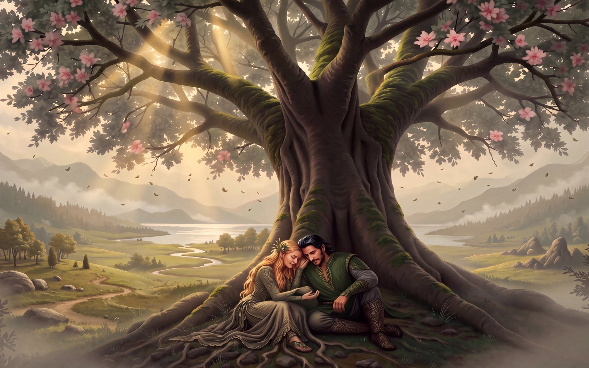
A friendly village. Four ruins. A grief old enough to be mistaken for good weather.
Thomas A. Invictus · Morgash the Gravemaker · Gren Greenmantle · Jetten Elisedil Robert · Anthony · Tom · Drew — and Matt behind the screen Nine sessions, summer into autumn of 2026
Contents
Prologue — What Nobody Knew
The Company
The Country
Part One · The Road South
I. First Light on the Trade Way
II. The Lure in the Mist
Part Two · The Green Valley
III. No Crying in Greenrest
IV. The Heart Under the Hill
Part Three · The Count
V. The Long Rest
VI. The Widow Fen
VII. The Temple of Shar
VIII. The Wyrmwood
Part Four · The Heart Knot
IX. The Heart Knot
Epilogue — The First Autumn
Afterword — What the Narrator Knew
Appendices
A. What If…?
B. A Bestiary of the Misty Forest
PrologueWhat Nobody Knew
Long before there was a village, before there was a road, before anyone had thought to call the fog country a forest and draw it on a map, a fey lived in a valley in the Misty Forest. She was an old, deep thing of spring and growing — the kind of power that makes orchards heavy and winters mild without ever meaning to. She has forgotten her own name. Over the thousand years this story spans, she forgot almost everything. The only name left anywhere in her dreaming is Corin.
Corin was a mortal. He came walking out of the fog one morning, raven-haired and laughing at the impossible green of her valley, and she rose out of her orchard to look at him. What followed was the happiest memory anyone ever kept: seasons of him, the valley blooming a little harder every time he smiled, because she willed it so. Picnics. Harvest dances. Silver threading into the black of his hair, one visit at a time, and none in hers.
When she saw the silver she understood, in the way a thing of endless returning spring can understand anything, that he would end. So she offered him the only gift she had. Stay. Stay, and I'll make it summer for you forever. Be as I am. Never end. She said it on the best evening of all of it, with his face in her hands, and he smiled and deflected, and she laughed at that, delighted, and missed it completely. She said it again at dusk with the flowers closing, and this time it was an argument, and she was losing it. He had lived among the fey long enough to see what they become — the slow hollowing, the centuries of drifting, the beautiful creatures that forget their own names. If you take the ending out of me, there's nothing left that you love. A life isn't for keeping. It's for spending. Let me go and spend mine.
He walked down the hill toward the fog. She followed him exactly as far as she existed — to the line where her green met the mist — and stopped, because a dryad ends at her valley. The fog took him a step at a time. She never learned what became of him. Old, or happy, or nothing: his story ended somewhere past the fog, and no ending ever came back to her.
So she waited, because she could not do otherwise. The green comes back; the swallows come back; everything comes back, always. Every spring she made more glorious than the last, not from habit but as a signal-fire, a valley visible from far away so it could be found again. Decades of springs. And then there came a spring when even she knew that a mortal's handful of years was long spent — that however his story had gone, it had gone, and she would never know which ending it wore. She broke on the not-knowing.
Fey do not die. Death is a door shut to them; she could not even follow him through that. So she did the only thing left to a creature that cannot die and cannot bear to live: she tore out her own heart and shattered it. It broke into four true pieces, and the burst of it was the single most violent thing this gentle power ever did. The pieces could not die either — a fey heart cannot, and rot is death's business — so, denied the one ending flesh is allowed, they set: grief gone hard, turning in the air to warm, translucent crystal. What came to earth in four far-apart places across the fog country was not gore. It was gemstone with a heart still inside it. The same detonation tore the mists off her valley in a ring, the valley flinging back the fog that took him, one last time, too late — and the clearing it left in the Misty Forest has never closed since. Then, where she stood, she took root. She folded herself into her own tree and went down into sleep, dreaming rather than living, because living had Corin's leaving in it.
Here is the strangeness of it. Her grief had nowhere to go but her magic, and her magic knows only one verb: flourish. Her tears did not poison the valley. They bloomed it. A power of spring, weeping, is a land that cannot stop being fertile, lucky, green. Every soft winter and heavy harvest in the valley for the next thousand years was a tear that fell long ago and was still landing. She was keeping her promise — summer for you forever — to the only thing that never left.
Settlers working south down the Trade Way found it eventually: a wide green valley with no mist in it at all, the best land anyone had ever seen, standing empty. They did not know why the mists parted there and they did not ask. They called the place Greenrest — a green place to rest on a long road — and only the oldest families ever remembered the quieter second reading. They flourished beyond all sense. And they dreamed. Anyone who slept in that valley dreamed of grief, a weeping they could not place, and over the generations the town tied the dreams to the one wrong thing in its paradise: the pale, half-dead tree in the square. They guessed something old was sleeping under it, probably a dryad, and then, being practical people with a good life, they decided to live with it. The apothecary's craft produced a weekly draught that stopped the dreaming. The whole town took it up as plain custom. Within a generation or two the dreams themselves were forgotten, and as far as Greenrest was concerned there was a dead tree, there was a tonic, and life was good.
They prayed to Chauntea, the Earthmother, for the harvest that never failed, and raised her a basilica no farming hamlet has any right to. But the goddess they praised was not the power that fed them, and Chauntea knew it. She knew her name was fixed to a false idol, and that the valley's whole sweet life was drawn from a soul denied its death — the one unnatural thing the Earthmother, above all gods, cannot abide. So she refused. In all Greenrest's history she never called a cleric, never granted a spell, never sent a single miracle. And because she is the gentlest of gods, her refusal looked like nothing at all. It was indistinguishable from the good weather they credited her for.
Nobody in Greenrest knew about the shards. Nobody knew the name Corin. Nobody knew that the treasure-story the passing adventurers chased — the Broken Heart, the last company called it — had anything to do with their tree. There was nothing nefarious in Greenrest, no conspiracy, no kept secret, no cage deliberately tended. It was exactly what it looked like: a lucky, kind, comfortable village that had long ago stopped asking why.
Four hunters came down the Trade Way in the summer of the thousandth year, following a map assembled from a gnome's research toward a relic none of them understood. This is what they did.
Dramatis PersonaeThe Company
Four hunters out of Daggerford. Their own griefs were the campaign's fuel — the first night in the valley mirrored each one back at its owner, and the Heart's final arithmetic was built on two of them.
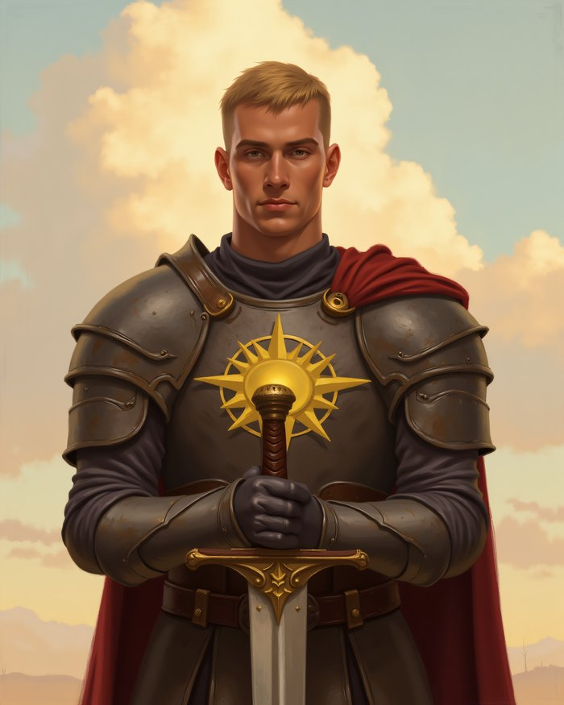
Thomas A. Invictus
Played by Robert
Human paladin of Lathander, sworn to the Oath of Vengeance. Twenty-eight, Daggerford born, a scribe in the ledger offices until six months before this story. His wife Ann and their four children were murdered by a man he had been investigating — a clerk selling names and body parts to buyers in the south — and following that trail is what surfaced the legend of the Broken Heart. He carries Oghma's symbol beside Lathander's, knows sign language, and has organised his whole life around finding one name.
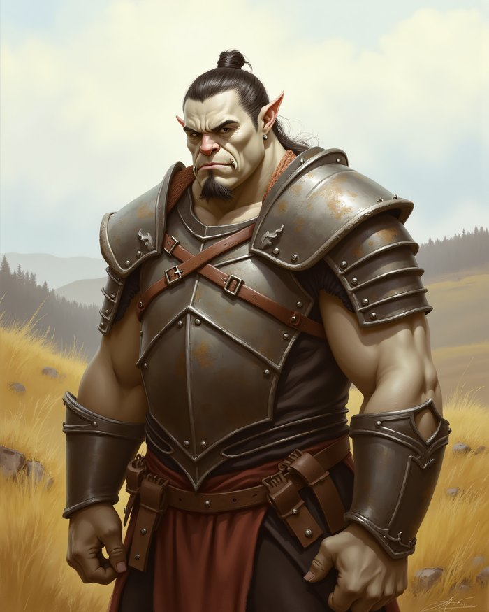
Morgash the Gravemaker
Played by Anthony
Bone-white orc, fighter, a Battle Master by trade and a gravedigger before that. Lower-City Baldur's Gate; then the Flaming Fist; then the Basilisk Gate, where his company held against the netherbrain and forty became nine, and he dug the graves himself. A caravan guard for hire now, one big score from retirement. The heartbreak he keeps private: a githyanki warrior named Lae'zel, a romance that began over a whetstone and ended with I cannot love someone in this world. Goodbye, my Morgash.
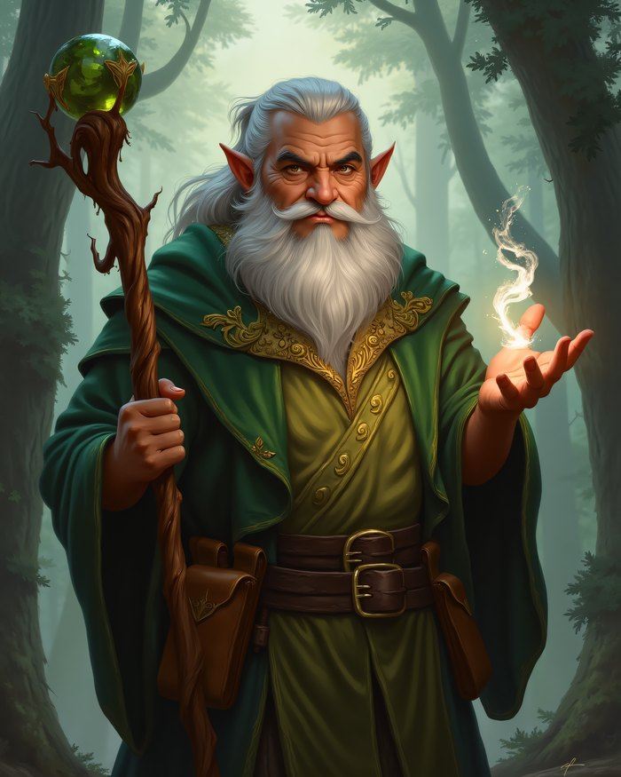
Gren Greenmantle
Played by Tom
Forest gnome sorcerer, white-bearded, small, suspicious by temperament. Raised in the Misty Forest and sent away to a monastery when the silver-white fire in him surfaced — cast out, in his own words, unwanted and unloved. The village elders pressed an acorn from their heart-oak into his hand the day he left, to be planted when he finds the place he belongs. He found the shard references in an old temple ledger; the party's map is his work. Holds a standing vendetta against will-o'-wisps.
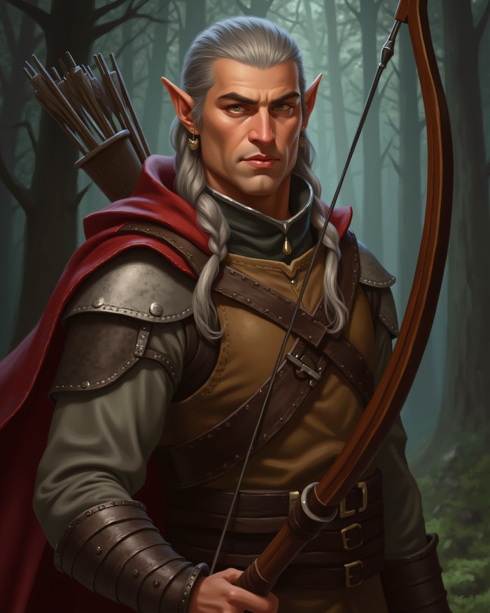
Jetten Elisedil
Played by Drew
Wood elf ranger out of the Chondalwood, one hundred and ten years old, Thomas's childhood friend from the ranch days. His sister died long ago and outliving her never healed; he wears her moonstone on a cord at his throat. A devotee of Sehanine Moonbow, lady of moonlight and dreams, which means he trusts what he sees when he sleeps. On the road to support Thomas, and for no other reason he will admit to.
Greenrest
Mayor Oswin Applewhite — warm, fatherly, mayor some fifteen years, never left the valley, never faced an election. Boasts, accurately, that there is no crying in Greenrest.
Selma — the apothecary. Brews the weekly tonic and the potions that are the town's only healing. Does not like change.
Ambrose Featherstone — keeper of the Long Rest, the inn. Gives the party the good rooms and frets over their wounds.
Mother Wend — the elderly dwarf who keeps the Full Larder. Knew all four of their names before they walked in.
Constable Warin Holt — captain of the Hedgewatch, fifty strong. We don't leave the town, and they don't come in here.
Coll — the gravedigger. The one man in town who wonders out loud. Sometimes skips his tonic.
Acolyte Enid — the church's devout young keeper. Has never once received a sign from her goddess, and never thought to ask why.
Pip — a halfling child, too young for customs, old enough to like the party. Sees the things adults explain away.
Elsewhere
The Kestrel Company — Sera Vantree, Marn Tillery, Brakk, Aldous, Edda. The last hunters to try the ruins. Half a year gone; never came home.
Osric, Hesper and Cadoc — three treasure-hunters who found something warm in the dark five centuries ago and could not put it down.
Hazel and Mabel — two green hags of the Widow Fen, sisters, who once were three.
Harrow Vane — high priest of Shar at the temple called the Iris. Has been watching Thomas for years.
Renlow Veck — a Daggerford shipping clerk with a gold signet ring.
Bramblemaw — a young green dragon who cannot explain why its eyes are wet.
Pudgy, Pinenut and Honeysuckle — squirrels.
The Dreamer — called the Green Lady by the town that never saw her. A dryad. Blond, tall, wood-and-blossom. Asleep.
The four shards
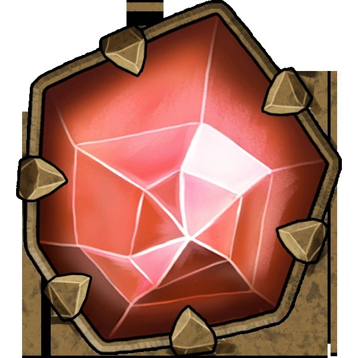
Graveheartarterial red · the Hollow Shrine
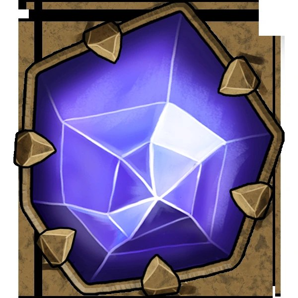
Tideheartdeep water blue · the Widow Fen
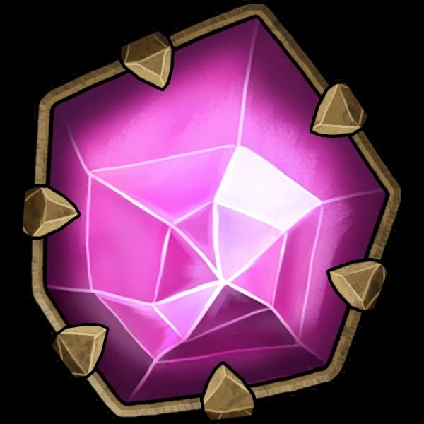
Duskheartnear-black purple · the Temple of Shar
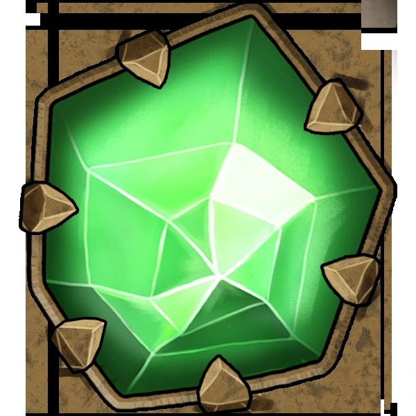
Thornheartvenom green · the Wyrmwood
Each is a piece of clear faceted stone the size of two cupped hands, and each is obviously still a heart: the chambering is there in the crystal, the great vessels sheared off clean. Stone should be cold; these are blood-warm, always. Once every few seconds they beat, and when they beat the light inside moves. They never chip, scratch or break. They have already been broken, and nothing since has been allowed to matter.
MapsThe Country
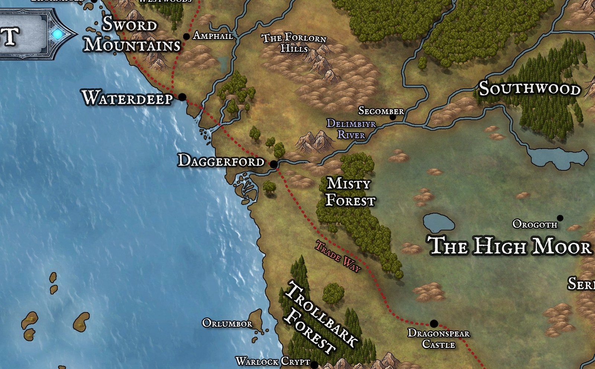
Where they started. Daggerford, where the Trade Way fords the Delimbiyr — the last real comfort before the road turns wild to the south. The Misty Forest lies below it, and the High Moor beyond.
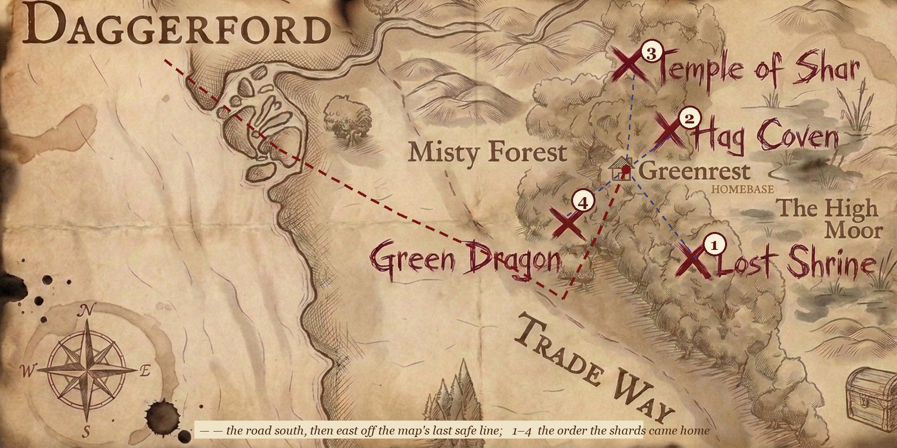
The map Gren assembled from a bought scrap, a caravanner's story, a line copied from a temple ledger and a rumour chased three towns over. The road south, then east off the map's last safe line; and the order the four shards came home.
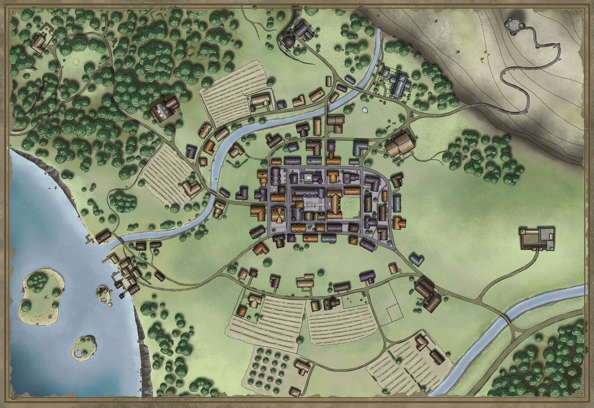
Greenrest. A village on a lake, ringed by orchards and hedged fields, visibly more prosperous than a village this size has any right to be. The square at its centre, the Long Rest beside it, the Mayor's Tower up the hill, the church, the garrison at the eastern edge — and in the middle of the square, the tree.
Part One
The Road South
In which four strangers leave the last friendly walls behind, a sword chooses a hand, and a village's name arrives before the village does.
Chapter IFirst Light on the Trade Way
The Silver Gauntlet stood against Daggerford's southern gatehouse, the adventurers' tavern, the last roof in town before the road. Four people sat at one of its tables who did not yet think of themselves as anything so grand as a company.
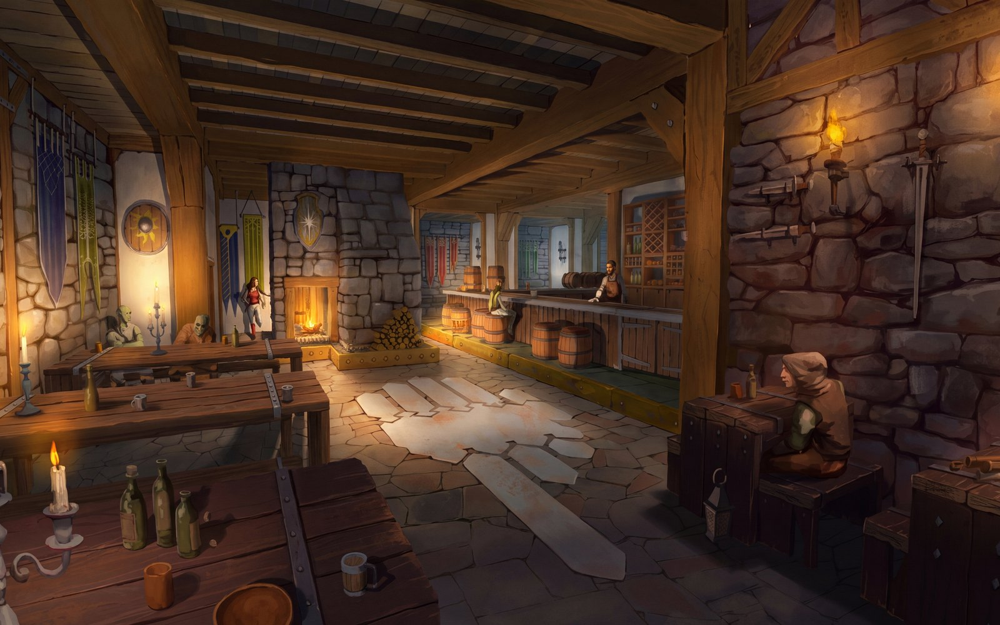
The Silver Gauntlet, where the map was pieced together over drinks and the four of them agreed, without ever quite saying so, to go.
Morgash spoke first, because Morgash generally did. An orc the colour of old bone, in plate that had seen a war and did not care to discuss it — a situation I don't want to talk about right now — a caravan guard for hire who wanted one big score and then a chair by a fire somewhere for the rest of his life. Gren Greenmantle, a gnome whose beard was white and whose robes were green and gold, had met him defending a town and had healed one of his companions; it was Gren who had found the references in the old temple ledger, Gren who had drawn the map, Gren who had brought them all here. Thomas Invictus was the one the others had come for: a Daggerford native, a scribe until six months ago, a paladin of Lathander now, with a dawn on his breastplate and a psalter in his pack. His wife and his four children had been murdered by thieves he had discovered selling body parts to somebody in the south. Following that trail was what had uncovered the Broken Heart. He suspected necromancy. He wanted a name. And Jetten Elisedil, the elf, who had known Thomas since Thomas was a boy on a ranch — it's your whole life, Thomas; I'm an elf — had come to see him through it.
Morgash heard Thomas's story and swore, plainly, in front of everyone: If there is any connection, they will feel the wrath. You will have your back. Vengeance — I swear it. He would be asked to keep that oath in a way he did not expect, in a stone cell two months later, and he would keep it.
What they knew, they knew from drinks and research: the green dragon was young, a wyrmling maybe, no adult had ever been rumoured; Shar was the goddess of loss and night and forgotten memory, her faithful utterly secretive; Greenrest was a small village nobody on the road could say much about. Lord Hargrove led them to the inn's vault and they divided their stored gear and a thousand gold. Morgash took up a greatsword with a Flaming Fist duty-mark on the blade, from his old company. Then south.
The Trade Way
The road was mostly what roads are. Two "couriers" riding north — Pibb and Josk — asked the party to settle a quarrel about whether a horse needs a full night's rest, and Thomas, who knew every legitimate document-dealer in Daggerford by name, read Pibb for a forger inside a sentence; Gren, meanwhile, quietly asked the horses, who reported themselves well-fed from an apple orchard and entirely without menace. The pair huffed off north, unmasked and unhindered. A barefoot halfling priest of Chauntea named Brother Tobin blessed them all and pressed a barley-token on Jetten as a kindred spirit of the wilds, and said a thing none of them would understand for weeks:
"The lady's been strange with her gifts of late. Some fields simply cannot fail; others starve a mile off. She doesn't usually play favourites."
What the narrator knows
Tobin was orthodox enough to have already sensed the wrongness in the south, without knowing its shape. The field that cannot fail was the valley. The Earthmother was not playing favourites; she was refusing a place. The party carried his token all the way to Greenrest and never once thought to look for a dead field on the way in — and there was none to find. The valley was all bloom.
The bridge, and the cave
Late in the afternoon they came on a merchant's cart overturned on a bridge, one wheel still turning, the crates picked over, fresh blood smeared toward the riverbank. Morgash found a great many booted prints in the blood. The trail led down to an unlit cave, and Jetten went in ahead with elf eyes and heard guttural laughter — a band of hobgoblins around a fire, several of them wounded from their own ambush, a big captain among them. Gren dropped a light on poor darkvision-less Thomas, which complicated Jetten's sneaking considerably. The council was short. Jetten had no love for hobgoblins, as an elf. Thomas would not leave them to take the next traveller on the road. Jetten's first arrow opened the fight.
It was long and scrappy, the way first fights are. An archer's arrow found Morgash early and deep. Thomas's Bane settled on two of them and ruined hobgoblin aim for the rest of the night; Gren's Bless held the line up. A shaman came out of the deeper dark mid-fight with a staff of poison vine, and put Jetten nearly on the floor twice — I'm almost dead — and Jetten put himself back up with a healing word. Morgash, on a night when his dice were ice-cold, turned a miss into a blow that should have ended the captain and then, with a hobgoblin already dying on his blade, said Finally hit something. Finally. Thomas's smite lit the captain like a lamp and Jetten's arrow finished him from across the cave. Gren built a false wall out of nothing, cast from behind it, and burned the shaman down in three volleys of fire. The last warrior, surrounded, took the flat of Morgash's pommel and Gren's roared ultimatum — Surrender or die! — and dropped his sword.
The interrogation went badly for the prisoner. Who sent them? I take no orders from no one but my captain. He looked at the corpse by the fire. …I am captain now. Who had they attacked? Merchants — that was the job. Thomas wanted one more question. Jetten ended it with a shortsword through the eye: Enough, hobgoblin scum.
First Light
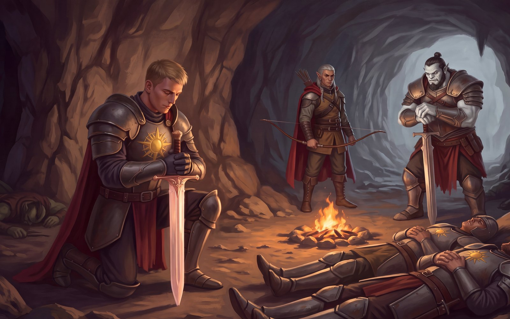
The captain's blade was no hobgoblin weapon. Thomas prayed the psalm for the dead over two of Lathander's own, and felt the warmth of his god's approval for the first time on the road.
In the back chamber lay the hobgoblins' victims, dead barely an hour: two well-appointed guards, one of them headless, a high-elf merchant woman in Waterdhavian finery, and her human companion. Thomas knelt by the guards and knew them — paladins of Lathander, his own god. He read the psalm for the dead from his psalter, felt the warm wash of the Dawnfather's approval, and would not touch a single thing that belonged to the faithful. He noticed, too, that the Trade Way is not usually like this: the hobgoblins had seemed driven here from somewhere, scouring land they did not know.
The captain's sword was rose-gold, oddly warm, and holding a little daylight even in the dark. Thomas felt it reach for him the moment he saw it. Over the night's rest it told him its name: First Light, a Dawnbringer's blade consecrated in a temple of Lathander. He would carry it into every ruin in the Misty Forest, and lose it in the one that mattered.
What the narrator knows
Two small threads began in this cave and stayed loose. Thomas wanted one more question out of the prisoner and Jetten's blade answered first, so whatever the hobgoblins had been driven from was never learned — though Thomas had noticed it was strange, and said so. And the letter, addressed in a careful hand to someone in Daggerford, rode in Jetten's pack for the rest of the campaign, unopened. The high-elf merchant was somebody in Waterdeep, and somebody was waiting for her. It is a kindness the road never asked of them, and it is still there to be done.
They buried the victims in shallow sword-dug graves with last rites, having briefly considered staking hobgoblin heads along the road as a warning and decided against it, and slept in a clean corner of the cave. Among the recovered goods was a letter, unsealed, addressed to someone in Daggerford. Jetten pocketed it unread. Nobody ever opened it. In the morning, to the east, stood the treeline of the Misty Forest, and the map said to leave the road there.
Chapter IIThe Lure in the Mist
Thomas pressed Gren about the village before they set out. The gnome had grown up in these woods and had never heard of Greenrest — but Misty Forest settlements are small, secluded and private, and a village unknown even to locals would not be strange. Morgash hauled the wrecked cart off the road before leaving, because it was in the way and he was tidy. Then east, off the map's last safe line.
The forest was Gren's childhood and Jetten's element, and the day's running joke was that neither of them could find their way through it. Trails a little more than deer trails, mist everywhere, small animals watching; Jetten scouted ahead and the ranger and the native gnome wandered, while the Baldur's Gate city orc, who had never been in anything like this, kept pointing Jetten the right direction and was right every time. By noon they knew they were halfway through.
The clearing
They stopped to rest in a clearing and the birdsong stopped with them. The mist went still. Jetten and Gren both read it in time, and neither was surprised when five blights pulled themselves out of the treeline — three of twig, two of vine — and ringed the camp. It was over quickly and nobody took a scratch: Jetten killed a vine blight before it ever moved; Morgash halved a twig blight in one slice and found a new trick in himself, a rush of adrenaline that carried him across the clearing to bottle up the far side; Thomas laughed off an entangling vine — you will never be able to catch me — and split the last twig blight with a stroke that found the perfect seam; Gren named his fire, and the woody thing burned twice as well for it. Afterward Gren stood over the ash and said what he would keep saying for the rest of the campaign: These are a corruption of life itself. There's more corruption somewhere. We need to find its source. Thomas opened his senses for fey, fiend and undead and found nothing within reach.
What the narrator knows
The blight-source was never found, and it was never in the valley. The valley was the one place in the Misty Forest with no corruption in it at all — only grief, which is different. The fog country around it was the same fey, foggy wild it had always been. Gren was right that something was wrong in the woods. He was looking on the wrong side of the tree-line.
The light in the mist
Hours more east, and late in the afternoon the mist gave way to bare wet rock, a low grey cliff split by a cleft taller than a man — and a single small light, round and warm as a candle, casting no glow and no shadow, drifting toward them and back. Quicker, then insistent, the way a hand beckons someone who is running out of time. Almost pleading. It slipped into the cave.
Gren, who is kind to fairies, thought one of them might be in distress. Jetten did not think this was Greenrest but was willing to take a quick look. Inside: cold air over the ankles, wet stone, something sweetly rotten. Gren dropped his light on Thomas again. Jetten crept ahead and saw the ambush waiting in the webs before it sprang. How delightful. It was a trap, guys. The dancing light winked out.
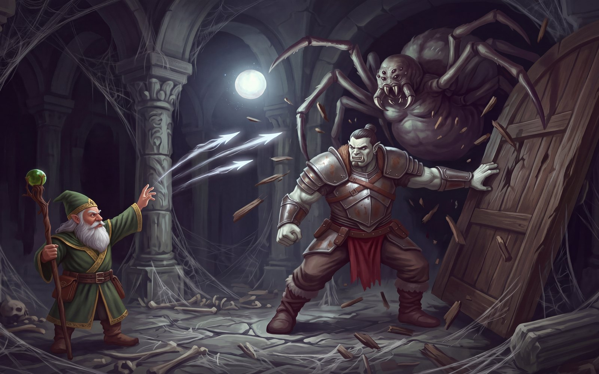
Morgash read the ettercap's nervous glances at a closed door, crossed the hall and put his shoulder to it before anything could come through. Then the Broodmother came through anyway.
What followed was a fight in waves in the dark of a ruined, web-strung hall. Jetten went in blades-first on the ettercap that had lured them and it clawed him and let out a long wail that called the brood. Gren answered with three rays of fire and burned the first one to a crisp; Morgash — whose turn came last, having rolled the worst initiative anyone would see all campaign, minutes after his all-day navigation clinic — read the ettercap's darting looks at a shut door and dashed across the hall to block it. Then the door burst. The Broodmother came through over him, bit deep and poisoned him, and Morgash, poisoned and surrounded, turned a miss into a hit with sheer precision and the patented double back-swing, and swallowed a dose of Keoghtom's ointment to burn the poison out. Broodlings webbed Thomas to the floor; the will-o'-wisp came back, and this time it looked very hostile, and shocked Gren from nowhere and vanished again. Gren stopped trying to hit a thing he could not see and turned his unerring darts of force on the Broodmother instead. Jetten peppered her. Thomas cut himself free and split a broodling clean out of existence. And Gren's last volley of magic missiles dropped the Broodmother where she stood.
The wisp never came back. It fled, not slain. Gren, who had been tricked, made a vow about it and all its kind, and would keep the vow for the rest of his life without ever getting to spend it.
The ruined temple
The arena revealed itself in the calm afterward: an ancient elven shrine, webbed and bone-strewn, that the ettercaps had made a feeding hall. Thomas's temple schooling read the stones — statues to fey figures, alms bowls that once held water, a small temple as elven temples are. Gren quietly poured a little water into each empty bowl before burning the webs out. Down a south passage lay a dead fey creature, an elf perhaps, months gone, a dagger still on the body, beside the ettercaps' victim-loot.
What the narrator knows
The ruined temple held more than loot. There was a line carved into the lintel — a light, and a road home — that Jetten's glance read only as etchings worn past reading, and beneath the shrine a thin place into the Feywild, which two of Thomas's checks came within a point of finding and did not. That thin place was where the displacer pack had come through. The dead elf in the south passage, months gone with a dagger still on the body, was Goldthorn's last bearer; nobody examined him past a glance. The watchtower above Greenrest, offered plainly as a place to look at the valley from before walking into it, was never climbed. None of it mattered to the ending. All of it was a door left quietly shut by people who had a map and a good reason to hurry, and a story that would have been happy to open any of them.
From the pile came two things that would matter. The first was a gilded scimitar that wanted to speak to Jetten the way First Light had spoken to Thomas — Goldthorn, lost with its bearer to the webs of a hidden temple in the Misty Forest and dormant since, whose fey magic could stir once between dawns into a bloom of clinging faerie light that let nothing hide in shadow. Jetten attuned to it overnight. The second was a stoppered clay vial of bitter green cordial among the web-wrapped effects of a traveller who had never left, its label in a tidy careful hand: One swallow, seventh-day, as ever. — Selma. Thomas read aloud what could be learned of it: whoever drank the swallow slept utterly, without dreams, for seven nights. No apothecary could name any other virtue, nor say why anyone would brew such a thing.
The village's name had found them before the village did. They also took a lantern whose light, they would learn, reveals what does not wish to be seen.
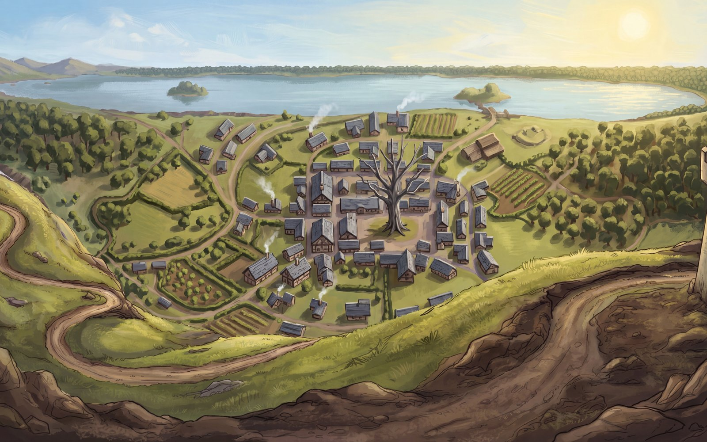
"The forest lets you go." Two hours east on the third morning, the trail climbed one last rise, and below lay Greenrest under a cloudless sky.
They slept in the cleansed temple, and two hours east the next morning the trees thinned, the trail climbed a last rise, and the forest let them go. Below, cradled in green meadows under a cloudless sky: slate roofs snug around a square, straight chimney smoke, orchards and hedged fields, birdsong, cut hay, woodsmoke. An old stone watchtower on the height to the right. And dead centre in all that green, a single great tree gone grey and sickly — the one wrong note in an otherwise perfect song.
Part Two
The Green Valley
In which a town welcomes them like family, four sleepers dream the same woman, and three treasure-hunters five centuries dead ask them to stay.
Chapter IIINo Crying in Greenrest
At the trailhead where the path left the forest, Morgash found animal prints circling — two legs, four, six, eight, impossible to say — that turned back into the trees. Whatever it was, it would not approach the town. He said so out loud. Then they went down.
Orchards, flourishing fields, woodsmoke, prosperity; it felt richer than Daggerford. A crowd had gathered before they reached the square, and Mayor Oswin Applewhite came through it to greet them like family coming home. He walked them through the whole of it himself — the Long Rest, where Ambrose kept the inn; the smithy; the church of the Earthmother; his own tower up the hill (the mayor always lives at the top, it's tradition); the square; the brew house; Selma's apothecary; the dockside on the lake; the Full Larder, where Mother Wend already knew all four of their names; the Hedgewatch garrison, fifty strong. Lodging was free. Food was free. Ale was free. We love our guests. You don't have to worry about a penny here.
Over supper at the Long Rest the mayor told them what he knew of the Broken Heart, which was what the last visitors had told him: a relic, four ruins, a company of adventurers called the Kestrels who had come through some months back looking for it and never come back. Sadly, life is good here, he said. As long as everything is status quo, I'm happy. And then, as a boast, the line the whole campaign would turn on: There is no crying in Greenrest.
Constable Warin Holt cut in on the monster talk, and later, quietly: I think I know the mistakes those adventurers made. Come to the barracks. I don't want to bother Oswin with such things. At the barracks he was plain. His scouts had tracked displacer beasts in the forest for years. They had stalked the Kestrels, waited for a weak moment, and killed them at an old temple south-east of town; the scouts had seen the battle-sign and would not go closer. They've latched onto you like they did the others. They cannot be deterred until their quarry is slain. Kill them first, at a moment of your choosing, at full strength — or come home wounded some night and be jumped. His men defended the town only. We don't leave the town, and they don't come in here.
On the inn porch a halfling child named Pip informed Gren that he was taller than him, buddy, and then, unprompted: Did the black cats follow you too? Big black cats with too many legs, seen circling the town when the Kestrels were here and again an hour before this party came out of the trees. He had never told anyone, because he didn't want to bother them. He refused a gold piece on the grounds that he had everything he needed here. And Thomas found the gravedigger, Coll, at the inn — a lifelong local who said it hasn't been right since the Kestrels came through complaining they weren't sleeping well, which had reminded him of being a boy with bad dreams before Selma helped him out. The whole town took the sleep-draught weekly, he confirmed, from childhood — as soon as we're old enough to dream. Thomas took out the vial from the ettercap temple and read Selma's label to the table. Same seventh-day cadence.
It was Gren who decided it. Let's spend the night without drinking the tonic. Something's fishy about this town.
The night of dreams
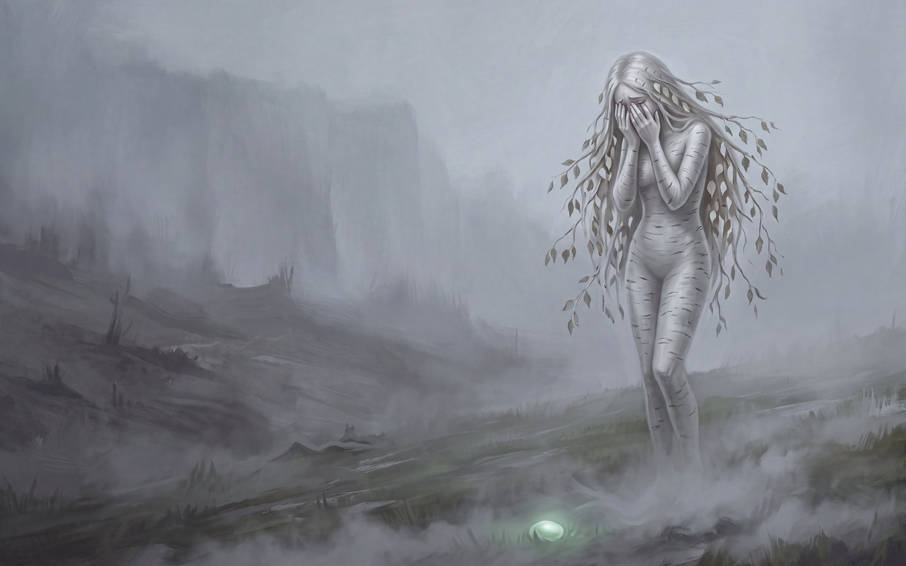
The same visitor came to all four of them: a pale woman shaped like a white tree, hair of leaves and branches, weeping — and her grief bled into each of theirs.
All four dreamed the same figure, and each of them dreamed her differently. Thomas dreamed the murder of his wife and children, and underneath the oath of vengeance found the grief he had built the oath to cover. Morgash dreamed Lae'zel's goodbye in Baldur's Gate — I cannot love someone in this world — and the red dragon that carried her away. Gren dreamed the village elders sending him north, and the suspicion, never confirmed, that it was the fire in him they were sending away: cast out, unwanted, unloved. Jetten dreamed his sister, dead so long ago, and the cruelty of outliving her — and while he dreamed it, eyes open in trance, the moonstone at his throat glowed bright green.
In the morning they compared notes, except for Morgash, who admitted the weeping woman and refused the details. I won't give details about my broken heart. Gren's temple schooling surfaced with perfect clarity: the figure was a dryad — fey, immortal, a life rotated between elf-shape and tree. Thomas connected it at once. The dead tree in the square.
What the narrator knows
Anyone who slept in Greenrest dreamed of grief, except the villagers, who had taken the tonic weekly for generations and no longer dreamed at all. A private dream belongs to the dreamer; a dream four people can compare at breakfast is someone else's, reaching out. The town had solved this mystery centuries ago by not thinking about it. Nobody in Greenrest had withheld the tonic from the party. It simply never occurred to anyone to press their grandmother's habit on a traveller.
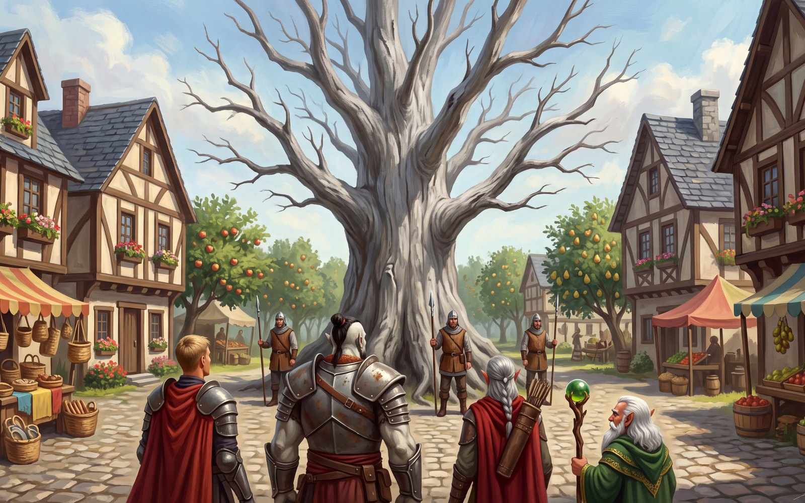
Four guards on a dead tree, with orders from the mayor and the constable: nobody harms it, nobody chips the bark. "It's the one thing that doesn't flourish. Almost like a symbol of our town."
In the square that morning, four watchmen stood posted on the tree. Their orders came from the constable and the mayor: let no one destroy it, let no one chip the bark, watch it. It had always been like this, a guard said, born here; they kept trying to revive it and nothing worked. Jetten looked at it and saw a dead tree. Thomas looked harder and saw a sick one, uncared-for, not quite gone. Morgash said, loudly, that four guards for a dead tree did not add up. Gren said what they were all thinking: It might be her tree. And Selma's drugging the whole town. We talk to the apothecary after.
They did not talk to the apothecary after. The hunt took the day.
What the narrator knows
This is the morning the party made up its mind about Greenrest, and it is worth being exact about what it was made up from: a label on a vial, a gravedigger's childhood memory, four guards on a tree, and one night of bad dreams. From those four facts Gren produced Selma's drugging the whole town, and the theory never really left the table. Every one of those facts was true; the conclusion was not, which is the ordinary way a good theory goes wrong. Selma was an honest woman brewing her grandmother's recipe; the guards were reverence and prudence; the town had no idea what it was sitting on. What the party had actually found was a village that did not dream in a valley that gave strangers nightmares — a strangeness in plain sight, and an innocent one. They read a conspiracy into an absence, as anyone might. Warin's whisper — I don't want to bother Oswin with such things — was never followed up at the barracks; it was only the constable's embarrassment about fifty men who could not leave the town, but that, too, would have been worth hearing him say.
The Kestrels' camp
Warin's line ran south-east to a ruined temple in the woods: a cold firepit, corpses, a chest, a debris pile — the Kestrel Company's last camp. Jetten's eyes picked the first displacer beast out of the fog at a hundred and thirty-five feet, prowling, watching, waiting for them to move. His opening shot slid off the thing's shimmer as if it had never been there, and it howled, and two more came, and then the alpha.
The first round was an education. The beasts stood a step to one side of where they appeared to stand; their tentacles reached further than anyone expected; Gren's thunder washed over them and did nothing at all; even Jetten's faerie fire, the textbook answer, found one beast that shrugged it off. A tentacle crit put Thomas at three hit points and broke his blessing. Jetten was mauled and dropped, and Gren's quiet cure put him back on his feet. Morgash dashed the courtyard, ate the alpha's rends, drank three potions, hit the floor and refused it — his orcish blood stood him up at one hit point — and then killed the first beast with a backswing.
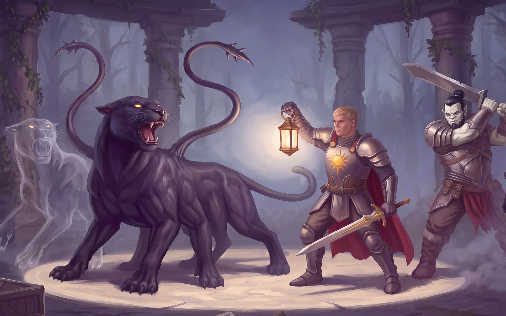
The answer came out of Thomas's memory of old books, and out of the ettercap temple's loot: the Lantern of Revealing. In its light the beasts shrieked and raged, and their displacement burned away.
Then Thomas remembered the lantern. Unhooded, its clear light filled thirty feet, and inside that circle the beasts' after-images tore off them like smoke — they shrieked and raged and, being clever animals, immediately learned the rule and skirmished at the edge of the glow. Thomas swore a vow of enmity, laid a bane on one that could not shake it, and when he hit the second beast with a thunderous smite that hurled it ten feet backward, Morgash's opportunity strike killed it in the air. Gren was the artillery and the medic both, wand and spell and unerring dart all night, because a thing that cannot be seen cannot dodge magic that does not miss. Jetten marked target after target and landed a dagger strike so perfect it went in to the hilt. And the alpha died on Thomas's turn — First Light through the chest, Lathander's light exploding out of its back. Leaderless, the last beast fled into the forest and was never seen again.
The camp held two caches. A crate stamped Full Larder — jars of Greenrest preserves, healing potions, a silver locket with a kestrel on it, a charcoal sketch of a weeping woman, a journal in the chronicler Marn Tillery's hand, and Sera Vantree's map of the four ruins. And the company's own gear in a brush pile: Sera's bow, a maul that never stopped moving, a pearl of power Gren had wanted and could not afford in Wend's shop that morning (glad I didn't buy it), and a suit of plate armour with claw-rents through the breast that had belonged to a shield-bearer named Brakk. They walked back to Greenrest for a safe night, and at the table that night they chose: the caves. The one the townsfolk had pointed the Kestrels toward.
What the narrator knows
The pack had come through a thin place at the ruined fey temple deep in the woods — the very shrine the party had cleaned the webs out of. The town had known about it all along; Warin's scouts had tracked it for years, and even Pip had watched it from the hill and counted too many legs. Knowing was all Greenrest could ever do about it. When the party killed it, the welcome, already warm, became open gratitude, and the party became the heroes of the valley. It was the high-water mark. The rest of the campaign would fall from it.
Chapter IVThe Heart Under the Hill
They never went back to town first. From the Kestrels' camp they read Marn's journal again — It is no shrine. It is a catacomb, cut deep under the hill, the dead laid in rows in the walls. And they did not stay in them — and Morgash made the argument that carried: the Kestrels never got past the dead, so the relic was probably still in there, and this time they knew exactly what was waiting. Thomas said aloud that the shrine was the farthest of the four from Greenrest and that he was nervous about the hags and the temple of Shar. They slept at the camp and went down the shrine road in the morning.
A minaret stuck out of the forest floor with a stair going down inside it. Gren asked a squirrel about it first. No, I don't go down there. That's not where the food is. Weird sounds, weird noises. We don't go down there. He fed it more rations than it could carry anyway and asked it to come and find him if it saw bad guys. That was useless, he said afterward. They never give you any information. Then Gren lit the sun on Thomas's shield, and they went down the spiral.
A statue of living rock at the bottom, robed, taller than a person, worn past recognition — no face, no hands — with an offering basin at its feet. A skeleton impaled on floor spikes that were not part of the original stone. Thomas read the place with a scholar's eye and found nothing he knew: no holy symbol, no scripture, no iconography of any living faith. Five hundred years old and not a scratch on it. The chisel-work was wrong for any tool still in use, far too many small strokes — the work of people with nothing but time. Whoever cut this had not been following a tradition. They were making it up. And the basin had never held an offering. Whoever built it had never brought anything to it.
The Hollowing
The catacombs were two doors into the same crypt, and skeletons came out of the first one. They were nothing. Morgash's maul shattered one on the riposte; Jetten's arrow exploded another into pieces. They opened every coffin in the walls afterward and every one was empty, and Gren said a prayer over each.
Behind the next door stood a dead man in the centre of a room of zombies, who pointed his sword and said You will join us. His name had been Aldous, and half a year ago he had been a Kestrel; the locket was still at his throat. He closed through Jetten's entangling vines, hit Morgash with a sword too cold to touch, reached out his fingers — Join me — and drew something out of him. Morgash felt the wound close. Something underneath it did not.
That was the whole of the Hollow's design in a sentence, and the table understood it at once. Every drained hit left permanently less of a person until they got out and slept in a real bed, and there is no real bed in a tomb. Grief, made into a rule. Thomas killed Aldous with First Light and then stood over the body reading Marn's journal in his head — Aldous's wounds closed, but he did not mend. Edda would not leave him — the same words the dungeon had just used for Morgash. He said out loud that he was afraid of having an orc that turned into a wight. He was wrong about the mechanism, as it happens, and nobody ever corrected him, because the fear drove the right decisions.
The talk of undying things drew a thing out of Gren. He showed the others the acorn his elders had pressed into his hand the day they sent him north: from the heart-oak of his warren, still green after all these years, to be planted when he found the place he belonged. I still have not found the place where I belong.
Osric, the Keeper
The doors opened on a long pillared hall, a platform in the dark at the far end, two more wights, a crowd of skeletons, and a wight on a throne who beckoned them forward. Gren asked if they should come in and parley. Come in. Jetten asked what he had done with Edda. She's here. She's with us. She's happier. Thomas asked why they should not simply destroy him here and now, and Osric, who had managed courteous for five hundred years and did not suffer insolence, told him: I thought you would be interesting, but your insolence irritates me. You will not make a suitable wight. You'll make an excellent zombie.
Edda, the caster Marn's journal had promised, froze Jetten where he stood with a word. Morgash closed on her, missed, refused the miss, knocked her flat, and then hit her so hard that the spell broke in her mouth and Jetten was free — the best sequence of the night. Osric worked him over for it, drain after drain, until there was two-thirds of an orc left standing. Then Gren opened the driftglobe the party had carried since the first cave and let it burn as daylight, and the whole room lit, and Osric and Edda shrieked and recoiled from it, and every swing they took for the rest of the fight was made at a disadvantage. A skeletal mage answered cleverly with a sphere of darkness over the globe, and Gren spent his next turn simply carrying the one-pound thing out of the dark by hand. Edda tried to command Morgash and he shook it off, and the maul that had broken her spell broke her too. Thomas held his bane through every drained hit, found a perfect seam in Osric's guard, and when it was time, asked for exactly what he wanted: I don't like this guy. I'm going to chop his head off. The wight's head went up, came down, and rolled down the stairs.
"Not so cocky now, are you, Osric." — "You should have talked to us, Osric." — "I hate Osric."
Hesper, the Mortician
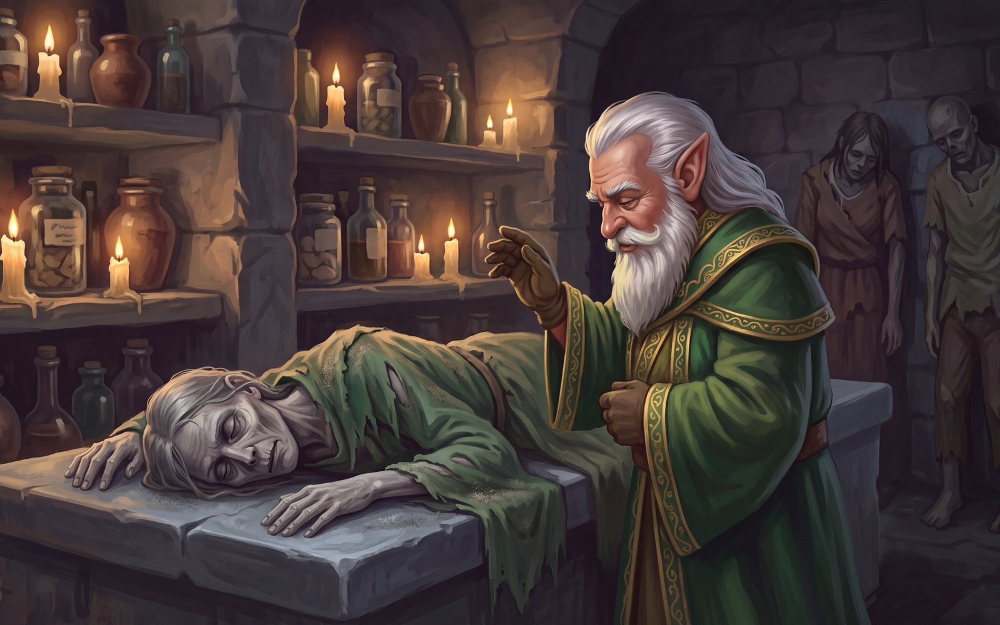
"I am Hesper. I will answer plainly. No riddles, no bargaining. To be honest, I haven't talked to anyone in a very long time. What is your question?"
Through the east doors: a wight on a dais between two zombies, who looked up and did not fight. She saw the blood on them and knew where it was from. That means Osric is finally dead, or you would not be standing in that doorway. He was very old and very tired. I hope he was courteous with you.
She told them the origin of everything, in her own words. Three hundred, four hundred, five hundred years ago, she and Osric and Cadoc had been treasure hunters. They found a glowing shard in a cave — warm, beating, the size of two cupped hands — and could not put it down. They brought it here to keep it safe. In time their greed became undeath. They cut the stair so no one else could take it. They cut every way in they knew. And so they stood with the Graveheart, lonely, but it gave them life, and it waited, guarded by Cadoc, for the next body to be prepared as a wight to keep them company. But I'm tired. I don't want to do this anymore.
Cadoc, she said, would not speak to them as she did. He was the one closest to it, the one most inured with it; he would only try to kill them. There was no bargaining with Cadoc. The zombies would not hurt them, and would die with her. Morgash asked whether she could undo what the drain had done, and she could not. She told them to take what was in her chest — a bone key for the locked west doors, and a draught of wholeness, the one cure in the world for what the Hollow took — I have no use for either anymore. I'm sure you will need them both. Gren asked how she would like it done. She walked up to the slab and laid her head on it. When it was over both zombies collapsed where they stood, in the same moment, like cut strings.
What the narrator knows
Hesper had just killed the party's favourite theory without any of them noticing. They had suspected, since the tonic and the guards on the tree, that Greenrest was behind the dead under the hill. Hesper had dated herself at three to five centuries; the village was younger than that; and had anyone said the word "Greenrest" to her, she would have answered, honestly, I don't know that word. Nobody asked. The kill-shot never fired. The three treasure hunters had never learned what the shard was, either: there is no image of the Dreamer anywhere in the shrine, no name, no story. Everything they carved, they invented, and it was worn past recognition before the town above them was founded.
What the narrator knows
Hesper was also the first person in the campaign to say the shard's four beats — warm, beating, the size of two cupped hands — and nobody at the altar an hour later thought to connect three greedy treasure-hunters found one warm beating shard with there are three more out there. The Graveheart's own description said it: one chamber of a heart, and a heart has four. It waited in the description for anyone to read closely, and the four ruins stayed a menu for another two sessions before they became a countdown.
Morgash drank the draught, and all the hit points that had not come back came back, and the darkness went out of him. Gren's memory of temple lore offered the rest of them a cure, mostly right: a real bed, not a dungeon floor, would close the drained maximums. Let's charge in, Gren said, because it's time. The clock is ticking.
Cadoc, and the Graveheart
The west doors, unlocked with Hesper's key, opened on a hooded figure with a scythe wreathed in black fire, a ritual altar, a heap of skeletons with lit eyes — and, mounted in a container on the altar, a large crystalline heart.
Cadoc shot Thomas across the chamber and reached out with the black fire and took sixteen hit points off his ceiling in one touch. Morgash was the engine: closed, refused a miss, knocked the guardian flat, surged, hit twice more. Thomas kept Cadoc's guard sapped and spent his last spell on a smite that burned with an extra die for the undead. Gren, out of his best options, threw bolts of guiding light. The skeletal mage was a menace to the end — darkness again, an ice knife, a volley of missiles that put Morgash on the floor, where his orcish blood stood him back up at one hit point for the second time in two days. The kill came the way the best kills do: Cadoc swung his scythe at Morgash and missed so badly that Morgash's riposte was already coming back, and then the Maul of Momentum came down. The maul crushes his skull.
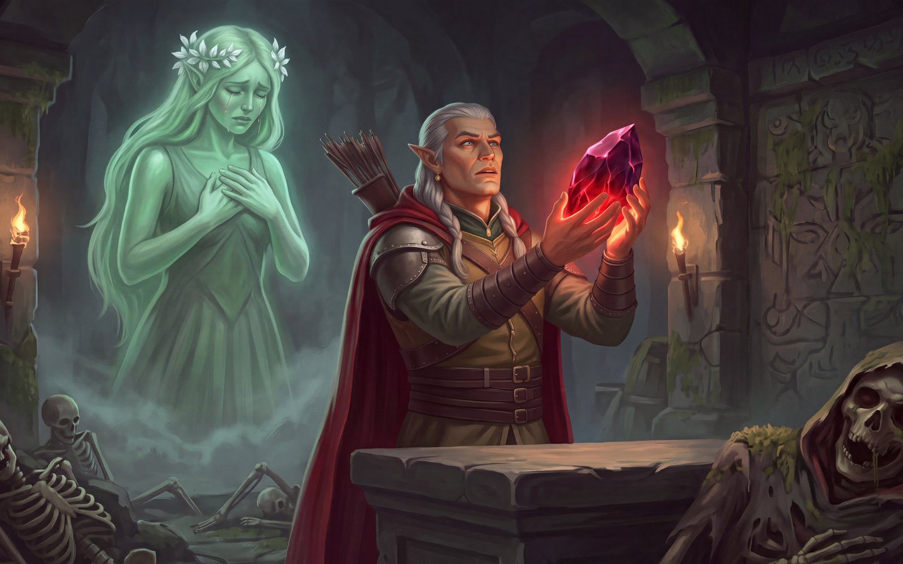
Jetten took it, and saw the woman from their dreams close her hands over her chest, and her heart burst.
Jetten took the Graveheart, and the vision fired. A beautiful green woman, glowing, white leaves crowning her head. Crying. As she sobbed she closed her hands over her chest and her heart burst; the pieces scattered into the dark, hardening as they flew; the burst drove the mists back from where she stood in a great ring, baring a green valley beside a beautiful lake. Where she had stood, a tree — grey, lifeless, asleep. A single faint heartbeat, and it was over.
Nobody said the word Greenrest out loud. The grey tree in the vision was the grey tree in the square, and every one of them knew it. They stood in the Hollow's heart, battered, three of the four of them permanently less than they had been that morning, with the first shard of the Broken Heart in their hands and no idea yet that a heart has four chambers.
Part Three
The Count
In which the tree in the square begins to wake, the dreams begin to tell the truth, and a village that never wept starts to dream again.
Chapter VThe Long Rest
They walked out of the Hollow into a silence that told them the place was spent. Thomas could not carry his own shield; the party carried it, and Morgash found him a stick for a cane. Jetten made a proper map of the way home, so perfect he could have sold it, and they came to the edge of Greenrest at dusk without a single wrong turn. Warin's scout waved them in as heroes. Word of the displacer pack had spread. Ambrose fed them and would not take coin.
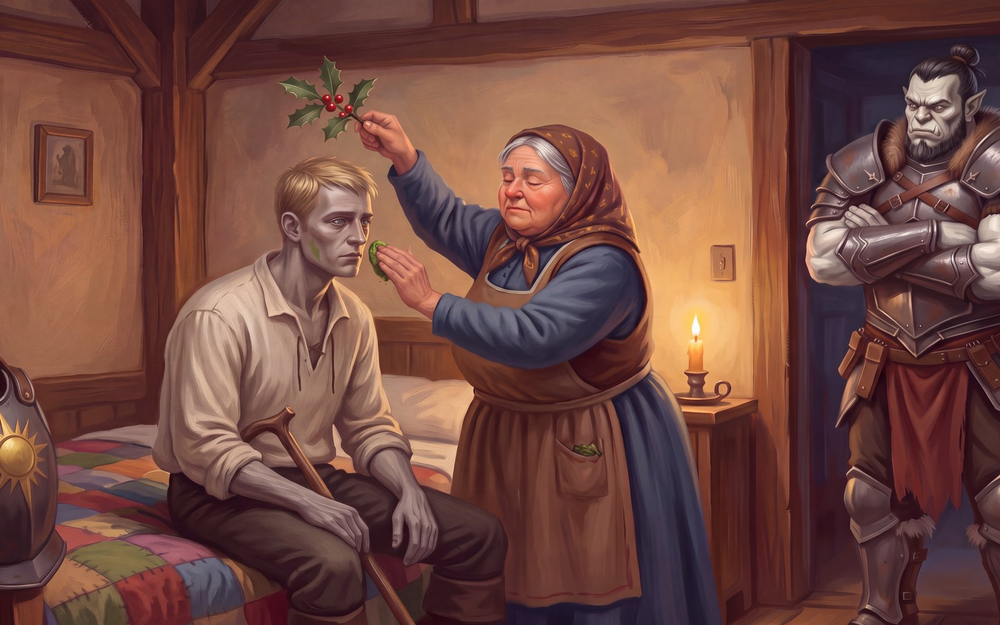
A healer was sent for. She waved holly over Thomas, prayed to Chauntea, and rubbed herbs on his face, and nothing whatever happened.
A healer was sent for Thomas. She waved holly, prayed to Chauntea, rubbed healing herbs on his grey face — and nothing happened, nothing at all. She suggested the church infirmary. It was the first time the party had seen it plainly: no divine magic answers in Greenrest. They put that down to a bad healer.
What the narrator knows
There has never been a cleric in Greenrest. No child of the valley has ever knelt and received the Weave. The only cure in town is Selma's — pure herbal alchemy, no god's grace in it, unusually potent because the valley's soil grows healing herbs as impossibly as it grows everything else. Every flask she sells is the Dreamer's gift wearing the Earthmother's name. So is every harvest. So is the tonic.
The first dream
That night, in real beds, all four of them dreamed together for the first time — one dream, one place, all four of them standing in it. A summer hillside. A raven-haired stranger laughing. A feeling of being adored that was not theirs. She was there and did not see them; when she drifted near and reached out it was through them, at someone else, and she called that someone Corin. Stay this time, she said to the hillside. Stay, and I'll make it summer for you forever. Jetten's moonstone glowed green inside the dream. In the morning the drained maximums had closed and Thomas could nearly stand without the stick.
Over breakfast they interrogated Ambrose, who answered like a man explaining the weather: the tonic was taken weekly like medicine, since childhood; a dead dryad haunted their dreams; Selma brewed it; it had been that way for generations. Thomas faked a relapse, slipped upstairs, and tested the tonic and the food for poison and disease. Both were clean.
The town day
They spent the recovery days working the town, and the town answered them the way an honest town does.
Selma showed them her wares and explained the recipe — berries, strained apple, a secret garden herb; perfectly harmless, it just stops you dreaming — inherited from the apothecary before her, twenty or thirty years back. The dryad was just "the dreamer." Gren read her carefully and found her honest. They told her the Kestrels' fate, and she opened the silver locket from the camp and found a letter Marn had never sent — four old places… the prize lies in exactly one… the shrine wasn't a shrine. A graveyard — and a house by the tannery in Daggerford where a woman named Tess was waiting for news. Selma promised to have the bodies seen to.
Gully the smith repaired Brakk's claw-rent plate overnight in trade for two of the cold black swords from the Hollow, because he wanted to study them. When the plate came back there was a roll-off for it; Morgash and Thomas both rolled abysmally, and Gren, who could not even wear it, rolled high and declared that neither of them deserved it. Thomas took it.
Mother Wend sold them kit and told them the valley's story as the valley told it: settled around the tree in a fogless valley, endless summer, fruit four times a year, two years of militia service for everyone, and one demographic tell — no elves or gnomes ever stayed; fey-born never seemed to trust the place. One dwarf had, generations back. That was her.
At the church, Thomas walked the nave with the eye of a man who had grown up in one and found that even the original stonework was all fruits and farming — built for Chauntea by people who did not understand her ways, a grand cathedral for a humble harvest goddess. Acolyte Enid admitted, when asked, that the goddess had never answered a single one of her prayers with a spell. She looked around at the gilded luxury and said I didn't choose this, and showed them the basement on prodding, which held nothing worse than gilded farm tools. In the graveyard a contented mourner told them she'd taken the tonic since she was a girl. People in Greenrest, Morgash observed, all said almost the same thing.
What the narrator knows
The church was a clue in stone and the party walked right through it. The relief over the door — a winged, blossoming figure the locals call Chauntea — carries none of the Earthmother's signs: no sheaf, no sun, no rose. It is the Green Lady wearing the Earthmother's name. Grove and fey trappings everywhere, too many, wrong for the goddess. The grandeur is gratitude architecture, raised over generations out of the overflow of a sleeping fey's grief — a building full of worship and empty of divinity. Enid was the purest believer in the wrongest faith, and the silence she had never noticed was a refusal.
Coll complained he had no work, and admitted that he sometimes skipped his tonic, got the dreams, and went back on it. Gren asked him to skip it again and talk next time. He lit up at the job of taking scouts out for the displacer carcasses and the two lockets on the wights' bodies: Finally, something to do.Pip reported, in passing, the session's sharpest clue, delivered by a child: Selma was nervous and unhappy that the tree was growing.
And Oswin, at his tower, gave them the mayor's-line history and a confession: he and Selma both privately believed the valley's bounty was the dryad's, not Chauntea's — that cleric has never cast a real divine spell in my life. Shown the charcoal sketch of the weeping woman from the Kestrels' crate, he knew her at once, from his own childhood dreams. That's her. That's the dryad. Then he walked them out to the square, and there were buds on the tree. The first new growth in the town's living memory. Double heroes, he called them.
What the narrator knows
The town day was the party's best chance to test its theory, and the day the theory tested them instead. Gren read Selma with an honest man's insight and found her honest — and the company, understandably, trusted the roll a little less than they trusted their suspicion. Nobody followed the name Corin, which the dryad had now said aloud to them twice; the dreams would explain it for them soon enough. And Jetten's moonstone had now glowed in two dreams, and he had not asked anyone about it, which is an elf's way. It is the trap suspicion sets for everyone: a party wary of the whole town was, that day, curious about none of it in particular.
Jetten walked past the tree with the Graveheart in his pouch, and it beat harder the closer he came, and softer walking away. They said it out loud to each other afterward. The shard and the tree were one thing.
The second night the dream came again, the same hillside, the same greeting — Corin? Stay this time. And this time Jetten did something nobody had scripted. He held out the Graveheart. Her eyes widened. And the dream cut.
What the narrator knows
In a thousand years of dreaming that was the one moment the dream looked back: not her recognising them — she would not see them for three more shards — but her heart recognising a piece of itself. The party would not understand what they had done until the fourth dream, when she said you've been here, in the summer, at the fog, at the breaking. I thought you were memories I hadn't met yet.
Longshadow
They chose the Widow Fen for the second site, because it was closest and Thomas's worry about the hags had faded, and they bought antitoxins because the dragon was for later. On the road out a man-shaped shadow crossed the ground with nothing above it to cast it, and the squirrels, when Gren asked, gave him the name: Longshadow. Flying stag. Feeds on people. Time to hide.
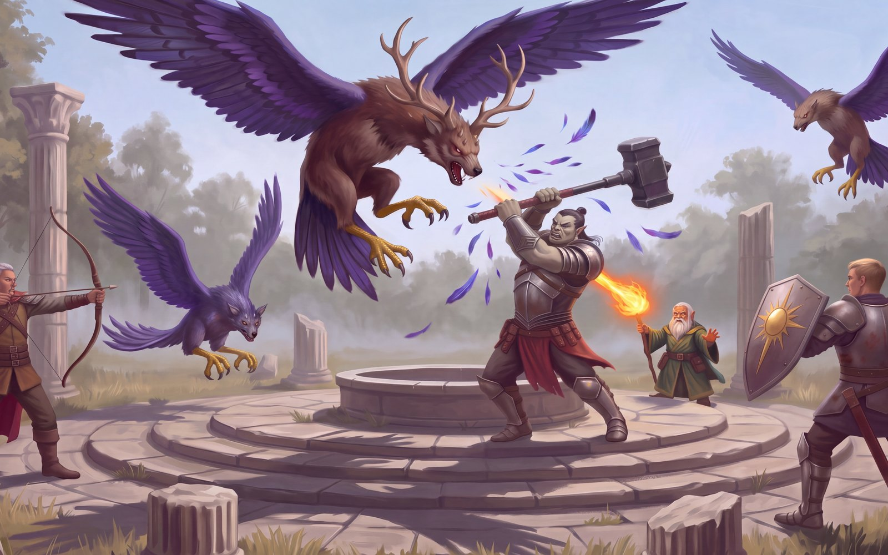
Morgash met the flying stag at the top of its stoop with the Maul of Momentum and killed it in one swing. The squirrels were told immediately.
Longshadow and two lesser perytons came down on them at the old temple ruin. Jetten spent the fight as the flock's favourite meal and lost his concentration twice to their talons; Gren's fire found them twice in the perfect place and the dice mocked him for it; Thomas learned his new plate turned every claw that came at it, and killed the last one on First Light. And Morgash, the moment Longshadow stooped into reach, swung the maul once and killed it in the air — and then, in two turns, gave a complete demonstration of everything a Battle Master is for, and killed the second peryton too.
Gren gave a feather to a squirrel as proof and launched a forest-wide campaign of information. Gren the Mighty has slain Longshadow! Six squirrels came back bearing acorns in tribute. This was not a joke. It would matter.
Chapter VIThe Widow Fen
Thomas called a steed out of the fey and rode a thing that was part plant and part horse north-east from the ruin. The ground softened, the muck-smell rose, and the forest gave up at the edge of open black water. Out in the fog stood a great tree with cabins and rope bridges in its crown, lights burning.
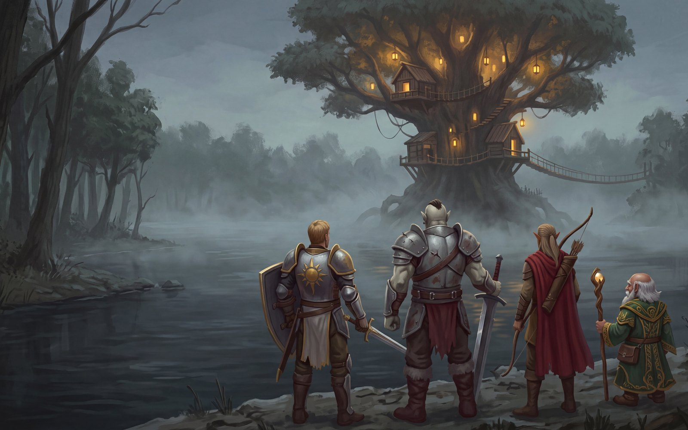
The Widow Fen, where the forest's edge drowns away toward the moors, and a coven of two hags had made a shard of pure heartbreak into an ingredient.
Morgash read the bullywugs before they read him: fey-born half-frogs, normally keeping to their own society, but these had a purplish-red glow behind the eyes that was not natural. Enthralled. Jetten nocked an arrow.
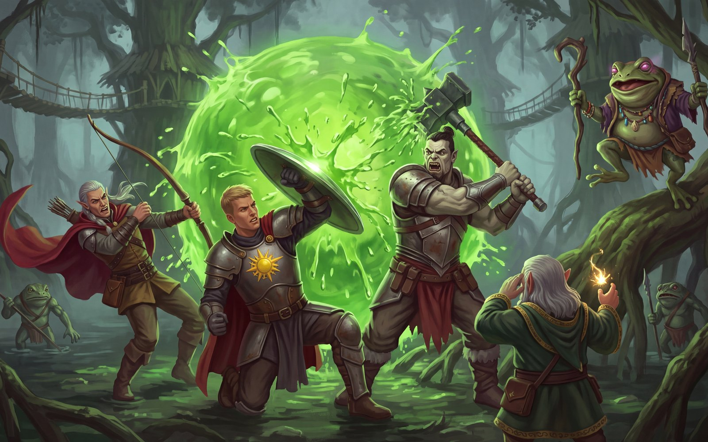
One spell nearly ended the campaign. All four of them failed to get clear of it; the sage's own warrior died in it; and it kept burning.
The first fight in the swamp almost ended everything. A bullywug bog sage leapt into range and dropped a sphere of acid over all four of them, and all four of them failed to get clear — Gren burned his luck on a second try and failed again. The sage killed one of its own warriors in the blast and hopped up and down, delighted with itself. Then the acid burned on, and Thomas and Jetten both went down. Jetten came back on his own healing word and put Thomas up; Gren's magic missiles killed the sage and he healed Thomas up off the floor again; Morgash carried the melee alone, knocking bullywugs flat with the maul while the others found their feet. When it was over the sage had done six times the damage of its four warriors put together. Jetten produced the trick of the night — a rope into a pocket of nowhere, and the whole party climbed up into it to rest where nothing could follow.
The treetop village was five short fights and one long revelation. Bullywugs on the bridges. Animated brooms, a flying sword, two rugs that tried to smother — the party took six points of damage across all five combats, and Gren, who had whiffed three fights running, snapped the flying sword in half with a critical burst. The rooms were the weight.
The Widows' Ledger. Thomas knew the cipher on sight; he had copied it a hundred times in Daggerford. A bill-of-lading book for the delivery of body parts, with a drop-stone marked on the moor path they had walked past that afternoon. The entries stopped six months back — right around when his family died. He said it out loud: This is exactly why I'm on this quest.
The Sisters' Notes, read aloud by Jetten, reframed the campaign: The heart is broken in four. RED — the barrow. BLUE — ours, below. GREEN, BLACK — not yet found. The dryad sleeps in the great tree on Greenrest's square. The heart is hers. Whole, it beats four times. One beat brings back our sister. Propose partnership. Do not fight. The hags knew they were coming, and the hags knew everything.
The grief-jars. Mourner's Teeth. Widow's Tears. A Mother's Little Finger. Thomas stared at the last one — how is that not my wife's finger in the jar? — and Gren checked the teeth and told him, flatly and kindly, that they were adult teeth. Nothing of his children's.
The sketches. Dozens of pages of the same hard-jawed, sharp-eyed woman with a greatsword, and on the back: HER. The one who took our sister. Do not let us forget her face. Morgash knew Lae'zel instantly. She had told him once, at a riverside teahouse outside Baldur's Gate, about killing a hag. In an oilcloth wrapped and rewrapped until the folds went soft was a pressed flower and a little carved sign, ALL WELCOME, from that teahouse. Morgash learned that the hags had been drawing his lost love's face for years, and said: That woman was awesome.
The parlour
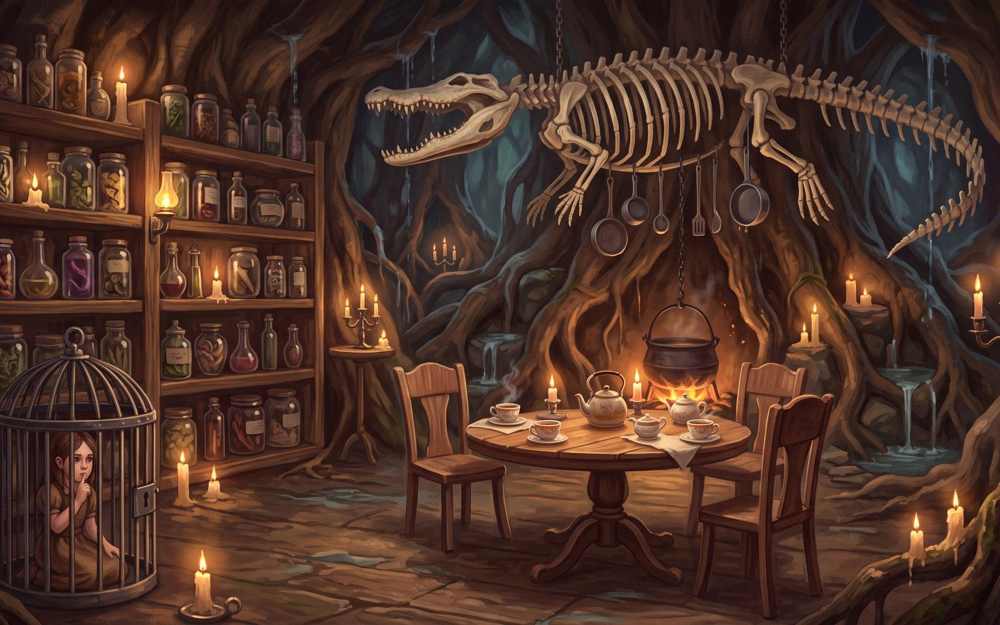
Candlelight where there should be none; a wall of jars floor to ceiling; a table set for three with the tea still steaming; and a little girl in a cage with a finger to her lips.
Down the hollow trunk, past the waterline, was a parlour. Jetten picked the cage's lock with his dagger and the little girl — "Masie" — thanked them, said she had been taken, and started asking questions. How many of you are there? They said you were bringing a stone; do you have the stone? What are your names? Gren read her as wrong. Morgash broke it: the girl walked up and started smelling him, said I smell Lae'zel on you, and he swung, and his hand went straight through her. The illusion dropped and two hags stepped out of the dark.
The offer was made plainly. Not only did she kill our sister — she killed your heart too. Help us gather the Heart; one beat wakes Ethel; the other three are yours. Resurrect the world for all we care. We just need our sister. And for Thomas, the hook with the barb in it: they knew who had supplied them from Daggerford. I don't care about your family. But I know who did it — the same ones who bring us the body parts. Thomas wanted the deal. The price the hags wanted was an unbreakable bond, death for the one who failed; Thomas offered a paladin's oath instead, and Hazel told him what she thought of it: The oath of a vengeance paladin means nothing to me. Jetten refused outright. Gren pushed for something free and got nothing. Hazel called it. These aren't going to bargain with us. Let's kill them, sister, and be done with this.
It was not close. Gren looked Hazel in the eye — I did not forget any of my spells — and dropped a fireball into the room so carefully shaped that it burned every animated thing in it and none of his friends. Morgash caught Mabel with a stroke that found the perfect seam, knocked her down twice, and when she blinked away told her no matter where you go, I'm going to find you. Thomas broke Hazel's hex with a smite. Jetten's arrow killed Mabel. Hazel, bloodied and on her knees, was offered surrender, and spat. You just killed my sister. Do you think I'm going to make any deal with you? I'd rather die. Gren tried to hold her for questioning and she shook it off. Morgash asked if he could take her alive, and she looked up at him and said Do it. I have nothing to live for. He smashed her skull, and a blue stone rolled out of her hand as she fell.
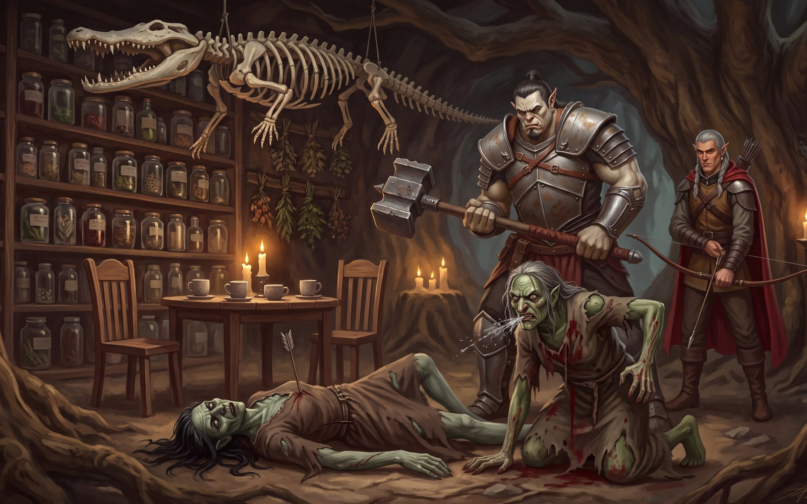
"You just killed my sister. Do you think I'm going to make any deal with you? I'd rather die."
The Tideheart showed whoever lifted it the same vision the Graveheart had: the dryad weeping, her heart bursting, the mists driven back. Two of four.
What the narrator knows
The drop-stone was marked on the moor path the party had walked past that afternoon. Nobody went back to it. The fen had a lower room whose jar was labelled ours and was never found; an annotated copy of Volo's Guide was looted and never opened. And the name Thomas had crossed the Misty Forest for was in that parlour, in two heads, and the party let the parley collapse into a fight inside three exchanges. The hags had asked for a bond; Thomas had offered an oath; Jetten had refused; and Hazel drew the only conclusion she could. It was a good fight, and a fair one to pick. It was also the moment the campaign's one purchasable truth walked out of reach — though Thomas would find the name anyway, at a shop counter, by keeping the right thing and asking the right person.
Thomas went straight to the jar-wall. Sources, prices, dates, years of them, all in the same hand as the ledger upstairs. Every Daggerford shipment accounted for. These two had been the buyers. And nowhere on that wall was the name of the man who sold. In a cage of packed straw in the corner lay a child's skeleton with MASIE scratched on the chest; the real one had died a long time ago. Among the tea-table loot they kept back one thing from sale: a gilt-framed portrait of a merchant nobody recognised. Jetten thought someone in town might.
What the narrator knows
The hags had been the one place in the campaign where the truth could be bought instead of dreamed, and they had died with most of it unsaid. Ethel, their sister, had died near Baldur's Gate at Lae'zel's hand. The partnership they proposed was the first read on who at the table would be tempted to keep the Heart, and Thomas's eyes had gone up. Nobody, hag or hunter, knew what became of Corin past the fog. Nobody ever will.
Chapter VIIThe Temple of Shar
They came home to Greenrest at nightfall with the shops shut and took the inn. Gren claimed a human-sized bed to himself and scattered caltrops in front of the door in case of Pip. And in real beds, with two shards in the house, they dreamed the Summer.
All four of them on the same hillside, high summer, the valley in bloom. A blonde woman under the great tree and a raven-haired man walking up to meet her; the valley bloomed harder every time he smiled. Then a season-montage — never quite winter — with more silver in his hair each visit and none in hers, until the two of them sat under the tree with his silver head on her shoulder, neither smiling, both knowing, and she said it: Stay. I will make it summer for you forever. Be as I am. Never end. Jetten's moonstone glowed as he went into trance. In the morning Jetten's woodcraft put the last piece in: dryads are fey who loved mortals. The dreamer under the tree was the dryad, and this dream was not her grief. It was her offer.
Ambrose met them in the common room to say nobody was eating; everybody was outside. The tree had budded overnight — hundreds of buds and one blossom already open — and a town that had never in living memory seen it bloom stood around it calling it a miracle. The four of them knew it was a count. Gren walked the Tideheart toward the trunk and felt it beat harder, and quieter walking away.
Breakfast with the mayor
Oswin took them to a small restaurant off the square for eggs and asked it plain. For fifteen years I never once had to think about that tree. Now it's all anyone talks about. What is it you keep bringing back to our home?
It went badly first. Gren pushed on the dryad and on Chauntea's silence; Thomas opened the body-parts trade and got a flat denial — not in this town, sir, not without my knowledge; and the mayor listed the free room and board and the eggs nobody had paid for, and stood up to leave, genuinely angry. It baffles me that you don't trust us when we've done nothing but give our open arms to you. Morgash saved it. He gave the mayor the honest, non-secret version: that beyond the town's edge, where Greenrest doesn't go, there had been evil things, and all the party had been doing was clearing them out so the town could prosper, and the tree had started to recover as they did it. Oswin took that, thanked him for finally being honest, and went off to his tower to think. The hearts stayed unmentioned by vote. Thomas got one more thing out of him before he went: the mayor agreed to skip his next dose of the tonic and compare dreams.
Selma did not like any of it. The town had not dreamed in generations; children started the potion at six; this morning was the first time in her life anyone had reported a dream, and her response was to try to make the potion stronger.
Mother Wend was where the session turned. Shown the gilt-framed portrait, she knew the sitter at once — the green waistcoat, the gold signet ring he liked to show off — and checked her ledgers. Renlow Veck. Came through every couple of months, always paid, took the Fen Trail out with sealed boxes and came back without them. Last seen about six months ago, heading home to Daggerford. Gren read the brass plate on the frame aloud — a gift, with gratitude, for my best customers — and Wend, who had assumed the boxes were apples, was appalled. Her dates and the Widows' Ledger matched to the day. Morgash, with a look that would have made a watchman kneel, secured the arrangement: if Veck ever came back, Wend would delay him and send for the constable.
Thomas said it aloud, at the table, for the first time: I know who was responsible for my family's assassination.
The Iris
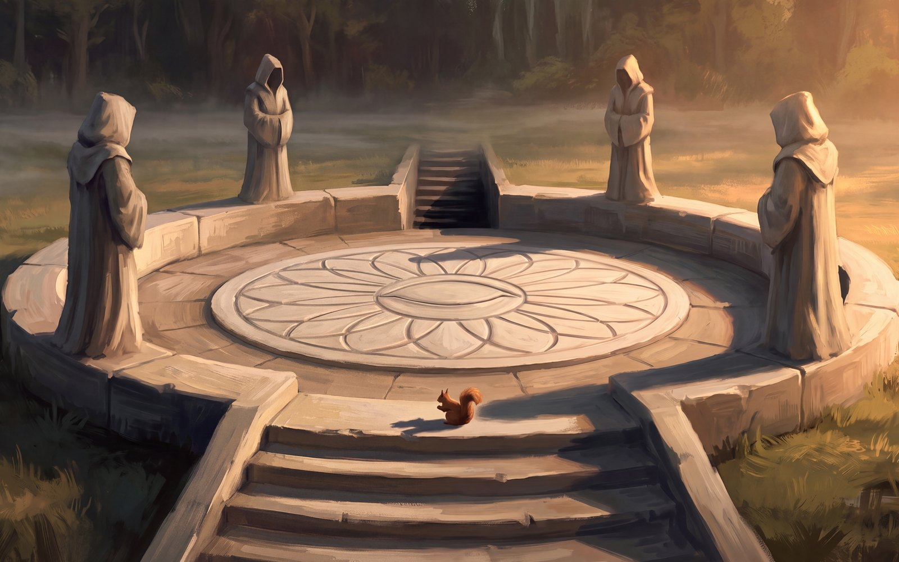
A great ring of pale stone in an old meadow, four hooded faces watching inward, and at the centre a shut stone eye. A squirrel named Pudgy explained the people in purple robes.
A day's march north, a dreamless camp, and on the second morning: a ring of pale stone in an old meadow, broad steps up from the south, four hooded statues watching inward, and at the centre a disc of stone cut in curved petals meeting at a point, like a shut eye. No door. Nobody to meet them. Stairs cutting down under the stone on the far side. Gren asked the local squirrel, a round one named Pudgy, who reported people in purple robes who lived down the stairs and mostly came out at night, and left a hero-worshipper with a nut. Morgash found no footprints on the stone, and no cobwebs either.
Harrow Vane came up the stair to meet them, and was not surprised. He opened with Thomas's full name and his dead wife's. Thomas Invictus of Daggerford. Ann's husband. You'll forgive me — we've followed you and your work for some time. The pitch came in pieces, and every piece was true. Thomas's power did not come from Lathander; he was an Oath of Vengeance paladin, it came from the oath, and the oath was built out of what had been taken from him. Shar is the Lady of Loss. Thomas had lost, and turned it into power, and that is rare and valuable. We're not asking you to be a supplicant. We're asking you to be a leader. We want you to be a Justiciar of Shar. Yes, they had a piece of the heart — the Duskheart — and yes, it could be part of the bargain. And they had Renlow Veck. He's for you, Thomas.
What the narrator knows
The Sharrans had had nothing to do with the murders, and said so, and it was true. They had taken Veck within weeks of them, for reasons of their own — which is why the Widows' Ledger stopped: the supplier had been removed. Every cultist in the building had come to Shar the same way, from inside a pain, and been offered oblivion as mercy, and taken it gratefully. And the temple was the campaign's rehearsal for its own ending. It was the one ruin where the party would kill people — mortals with names and reasons, nobody raised or charmed into it, all certain they were right. Whatever the party did here, they would be asked to do again in a village square.
The cell
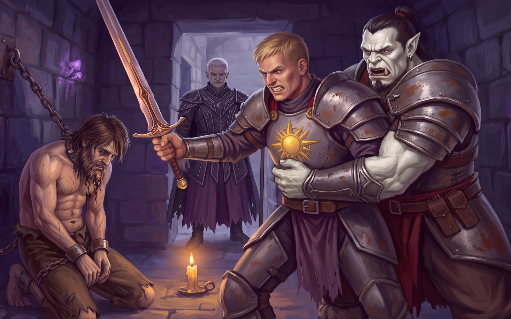
"He is no friend. He deserves to die, but not here, not now. I told you when I met you that I will be with you, and I will help you get justice."
Veck was bare-chested, wrists bolted to the rock, ragged trousers, the gold signet ring still on his right hand. He started apologising before anyone spoke. Thomas gave his voice thunder and asked why. The confession came out unprompted and complete. It had started with selling names — widows, people with nobody left to come asking. It was only ever money. Then a scribe in the ledger office started pulling threads and would not stop, and Veck went to that scribe's house to frighten him. It went wrong. I know I killed your family, he said, out loud, to the family's husband.
From the doorway, Harrow: That's it, Thomas. Become vengeance. This is what you were meant to do.
Morgash stopped him. Bodily — arms locked around the paladin's chest, feet planted, Jetten helping — and with an argument better than the grapple. You are going to allow this guy that you just met, that knew everything you have been going through and never came to help you a single time — now he wants something from you. He is no friend. He deserves to die, but not here, not now. I told you when I met you that I will be with you, and I will help you get justice. Jetten worked the other side: there was more to this than met the eye; Harrow Vane wanted something in return; and this would not bring the family back. Thomas's rage carried him through the hold, and the ogre-strength in his gauntlets broke Morgash's grip.
Out of honour, I have to kill this guy. End of story.
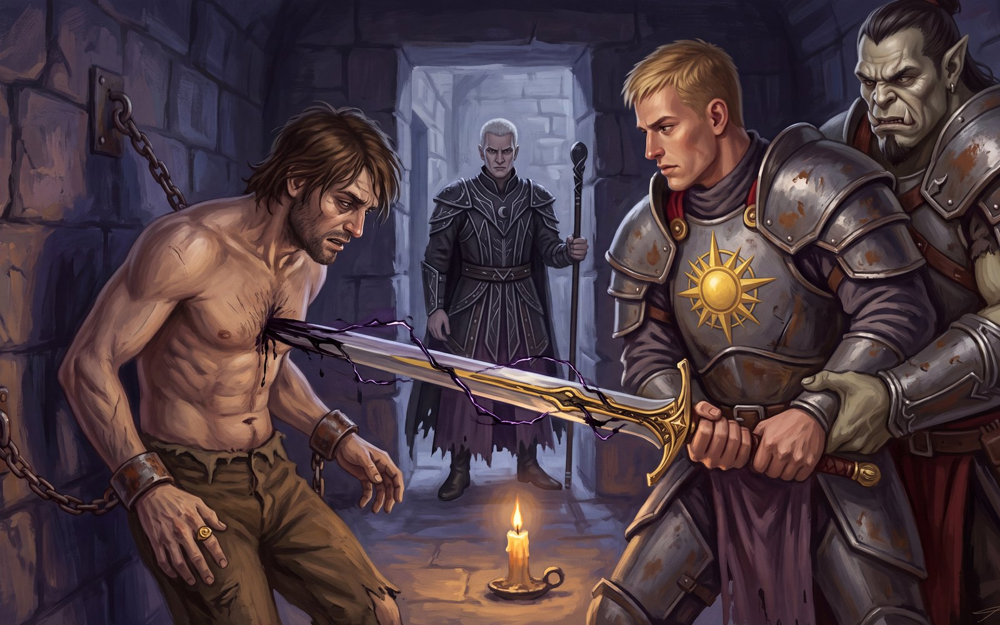
The sword did not flare. The warmth went out of it, as if the god himself slunk away — and then the rose-gold ran to ink.
He drove First Light into Veck's chest, and Morgash said, twice, you will regret this. The sword did not flare. The warmth went out of it. The vision of the Lathander paladin he had seen the night he first held it was simply gone — as if the god himself slunk away from him. The rose-gold ran to ink; the blade drank the candlelight and came back black, crackling with a purple light, and it announced its new name: Midnight.
Then Shar took her payment. He reached for his own first name in memory and there was nothing there, and it did not trouble him, because why would it. He was Justiciar Invictus. Asked about it later that night — I don't know what you're talking about. My name's always been Justiciar.
Harrow pulled down his robe and showed the Duskheart on a chain against his chest, and named the actual price. Never join it. Never wake the sleeping archfey. The heart must never become whole. Four pieces joined were four true resurrections — the wife, the children — and Shar's magic could stretch it further. All the goddess wanted in exchange was that the archfey under Greenrest, a demigoddess and an old friend of Chauntea and Selûne, stay in loss forever. As long as the daughter of her allies suffers, she is happy.
Invictus refused. This man deserved to die, but we still have a job to do, and I can't agree to that. Harrow said that in that case he could not give him the heart, and Invictus put him on the floor with a shield bash and hit him twice with the black sword, and Harrow, unimpressed — did you really think this would be that easy? — spoke a word and was gone. I'll see you downstairs.
What the narrator knows
Shar knew exactly whose heart was in pieces. Keeping her rivals' friend tortured in grief for eternity was the whole point; every beat of the Heart spent, and every beat stretched, was torment kept flowing. The fifth resurrection was not a kindness. It was a cruelty aimed at Selûne through Selûne's devotee's oldest friend. And the name was not erased from the world — only from him. Everyone else still knew it. Jetten still remembered a boy on a ranch.
What the narrator knows
Nobody ever opened the Iris. The shut stone eye at the centre of the ring, and the four hooded faces watching it, were passed twice — on the way in and on the way out — with a prisoner and a priest more urgent than a carving. The Daggerford end of Veck's trade — the ledger office, whoever else had known — was left for another day. And none of the three who watched Shar take a man's name asked him afterward what it had been; they let him be Justiciar for a while, which may have been the gentler thing.
Downstairs
Before following, Morgash cut the ring finger off Veck's corpse, signet and all, to carry back to Greenrest as proof. Upstairs, three cultists stood up and did not know what to do, and Invictus, holding a black sword, told them to kneel and kiss his hand, and one of them did. My Dark Justiciar. I am here to serve. They would not turn on the high priest, but they let the party walk past.
The temple floor was zealots, enforcers and acolytes, and it got ugly in the middle — a zealot's halberd put Jetten on the floor and Invictus's hands brought him back; an acolyte held Morgash rigid with a word; Gren's second careful fireball killed an acolyte and an enforcer together. The two fireballs did most of the fight. Then Harrow Vane, in the summoning circle on the lower level, was a real high priest: black bursts of necrotic power aimed at Morgash two at a time, an unholy word that stunned Jetten and broke Invictus's bane, a column of flame that put Morgash on the floor and could not keep him there. The party answered with everything they had, and Jetten finished it: Goldthorn took the high priest of Shar at the waist, and his chest fell away from his legs.
Harrow dropped a robe that turned blades, a staff that sharpened spells, and the Duskheart — near-black purple, the light crawling under its surface — which Jetten took and attuned. Its gift was very like Shar: advantage against anything that touched the mind, and, once at dusk, the power to reach into a memory and change it. They stripped the temple of gold and velvet and star-charts with no sun on them, and Invictus bluffed them out past the guards on the entrance floor before anyone worked out what had happened below, and made the road home to Greenrest, where a scout waved them in at the town line. Three of four.
Chapter VIIIThe Wyrmwood
The third dream broke the whole town open. With three shards in the house, back on the hillside in the mist, the party were not alone this time: other hazy figures stood in the fog around them, watching too. The dryad and the raven-haired man were arguing, and she was losing.
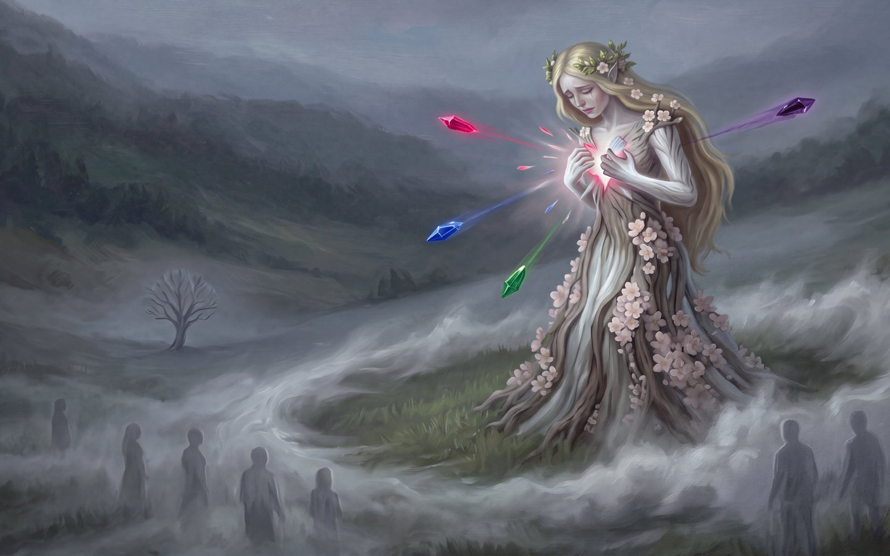
When she finally gave up, she tore her heart out and ripped it into four — red, blue, green and a blackish purple — and threw the pieces out in four directions.
"Stay — stay, and I'll make it summer for you forever. Be as I am. Never end."
"If you take the ending out of me, there's nothing left that you love. A life isn't for keeping, my dear. It's for spending. Let me go and spend mine."
He turned his back and went down the hill. She followed him exactly as far as a line she could not cross and watched the fog take him. Then time ran fast — real autumns, light winters, brief snow on the orchard — and every evening she waited at the fog-line for a man who never came back. When she finally gave up she tore out her heart and ripped it in four and threw the pieces to the four directions, and the shock blew the mist off the valley in a ring, all at once, and where she had stood she folded down into a tree.
Invictus opened the morning with a confession. I'm feeling like this town is deriving some major benefit from this dryad being pulled up in that tree, and I'm afraid that if we set her free it'll destroy this town. I just don't seem to have my same moral compass anymore. Maybe she deserves to be there. Jetten: It's not right to let her remain enslaved, Invictus. Gren pointed out that it was self-inflicted, and that the man had said life is for spending. Invictus let it drop, for now.
The town that woke up
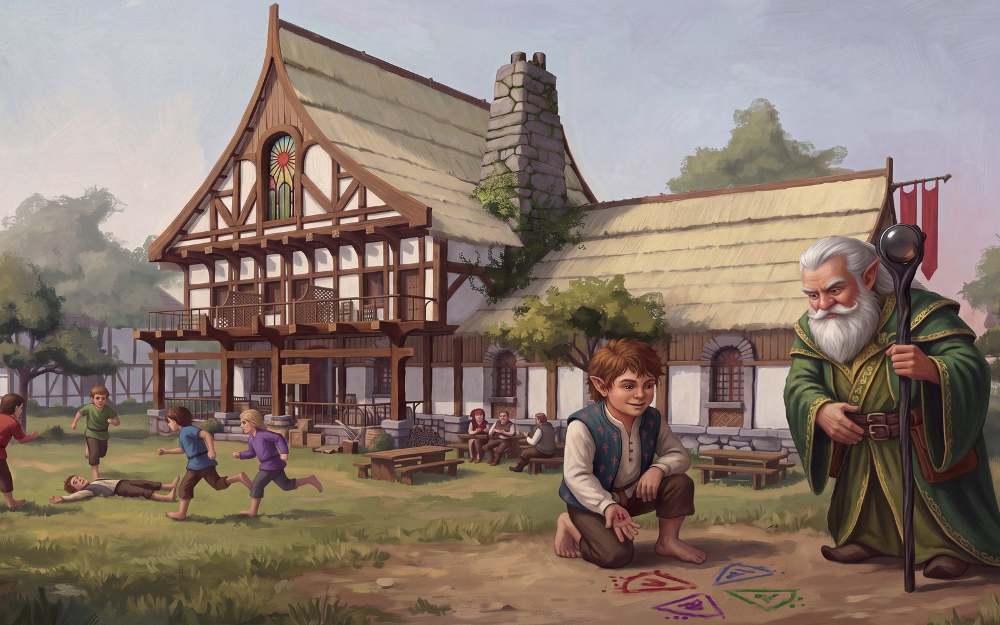
In the field beside the Long Rest the children had invented a game that morning: one falls down, and four run away in four directions in red, green, blue and purple shirts. The adults were not happy about it.
Oswin met them downstairs, exhausted and electrified. I saw you. You were on the hill. All four of them, and half the town had seen them too. The waitress had dreamed it and could not sleep — it's almost like the explosion made its way into my mind. Ambrose set down three glasses of orange juice with his hands shaking and walked back to the bar without a word. Invictus gave the mayor the careful version — a vision of something long ago, and the party's suspicion that it had to do with the town's endless summer — and Oswin got there on his own: She was offering him eternal summer, eternal life, and he refused. It seems we might be the beneficiaries of that. He asked whether they had seen those gems before, and was deflected. He would call the elders together that day. He was told, for the first time, about a temple of Shar in the forest whose acolytes were vehemently against freeing the dryad. And Morgash put the finger on the breakfast table. Sir, there's children here. I appreciate what you've done, but that's pretty disgusting.
Pip was outside drawing four wedges in the dirt in berry juice: red, blue, purple, green. Those are the gems that I dreamed about. Everybody sees them. I haven't had dreams in so long. Across the field the children were playing The Breaking.
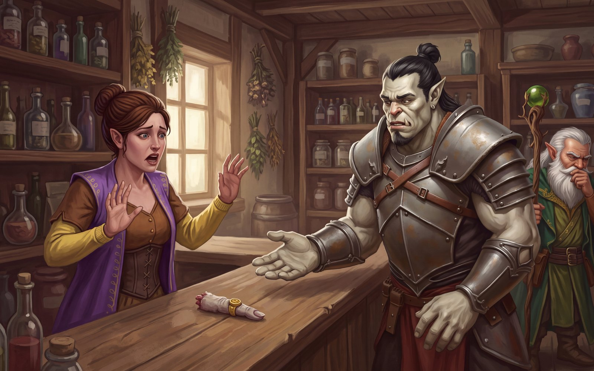
Morgash offered Selma "a piece of jewellery," still on the finger. She dropped it. Then she gave him a potion of superior healing on the house, and it saved Invictus's life two hours later.
Selma was not good. Her potions were not working; she was trying a double dose; and she had dreamed too — I saw the mist. I saw it roll out like a tide. The whole town is dreaming again. They bought poison resistance and fire breath from her for the dragon, and Morgash offered her a piece of jewellery, still attached, so she could rest assured the body-part trader was not coming back. She dropped it, and thanked him, and gave him a potion of superior healing on the house. Gren muttered about aiding and abetting on the way out.
The squirrels
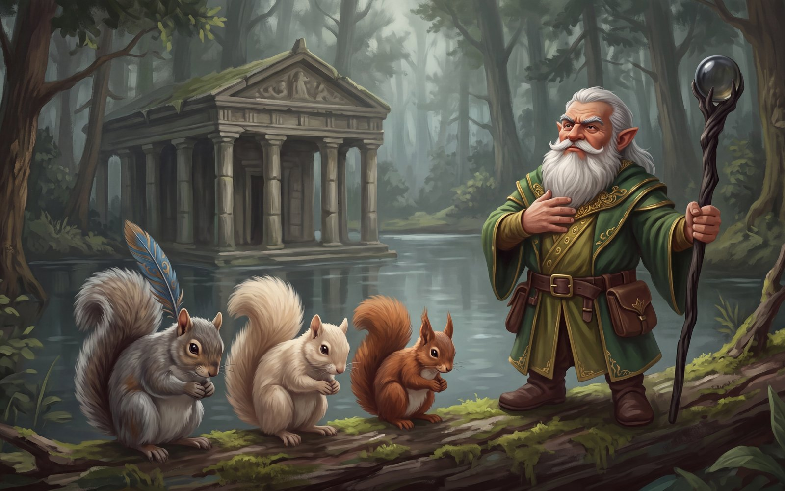
"Oh, it's the mighty warlord of the wood! All of the squirrels throughout the entire forest know of the great Gren." Pudgy wore Longshadow's feather behind his head.
South-west along Sera's map to a forest lake, and a temple sunk half into it. Three squirrels came out to meet Gren: Pudgy from the Iris, with one of Longshadow's feathers fixed behind his head, and his friends Pinenut and Honeysuckle. Gren demanded proper obeisance and all three bowed. Their intelligence was sound — the big green one sleeps at the far end on the shiny warm thing; the water's bad, don't drink it — and they volunteered to come in and guard him.
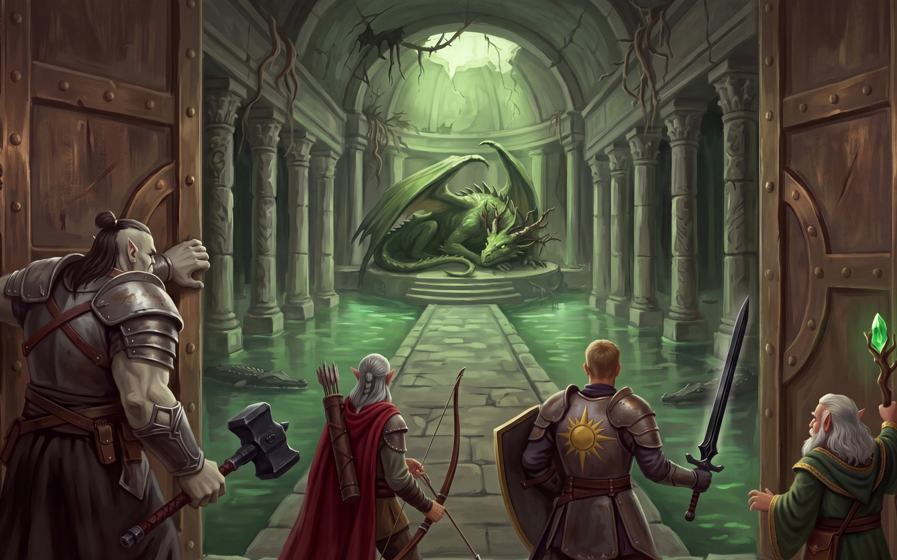
The Wyrmwood's lair was not a cave but a drowned temple older than anything in the valley, a processional causeway standing in green water with a throne dais at its far end.
Honeysuckle found a secret door in a fountain face; Pudgy squeezed through a collapsed tunnel and came back forty minutes later to report a hallway on the far side — you are a mighty Gren, how did you know? A shambling mound came straight at them and crumbled at Jetten's feet, a mound of shambling vegetables. A horned druid with unearthly green eyes — must serve the master — and a crocodile too big for its doorway came next; the crocodile got Invictus in its jaws twice and died on the black armour of necrotic fire he had wrapped himself in. Pudgy scratched open the last locked door. In a room of pulleys, one lever was rusted solid and two were freshly oiled, and a pull made a promising sound; Pinenut reported the bar across the dragon's doors was gone. Potions down. Master Gren, be careful. That's where we saw the dragon last time. We'll be right behind you, sir.
Bramblemaw
Both doors swung open on a long causeway across the water, crocodiles drifting uninterested below, and the dragon resting on the dais at the far end. It spoke in Draconic. Come for my treasure, eh? You'll die instead.
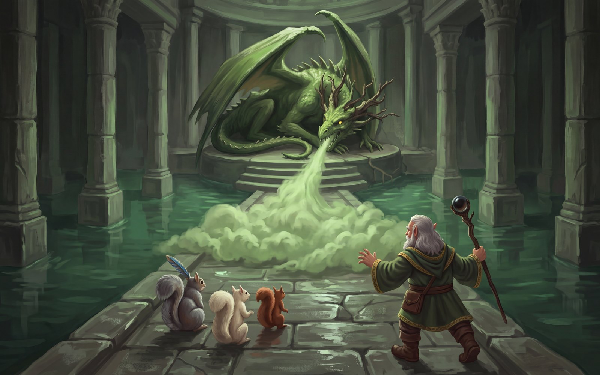
The dragon came twenty-five feet up the causeway and breathed. Pinenut, Honeysuckle and Pudgy were standing in front of Gren.
Bramblemaw moved first, came up the causeway, and breathed. Pinenut, Honeysuckle and Pudgy, who had been standing guard in front of their warlord, all died in the first breath. Jetten took the whole of it and lost his mark; Invictus took most of it; Gren, with the Tideheart's help, held. Then the dragon flew back to its perch and the fight was on. Invictus walked into the water, the crocodiles noticed, and he stepped through the mist and out again directly in front of the dragon and put it on its back with his shield; a psychic spike from the dragon's mind dropped Jetten, and Gren's word put him back up. Morgash, with Sera's bow, missed and refused the miss. The dragon flew and Invictus's shield bash floored it again, and it burned the first of its legendary resistances to stay up. Gren cast a careful slow over it and it burned the second. Morgash's maul knocked it down a third time and he hit it four times while it lay there, and it looked bloodied. The dragon's mind-spike put Invictus down, failing a death save on the floor. Gren put him back up. A crocodile-sized counterspell failed against the dragon's next one.
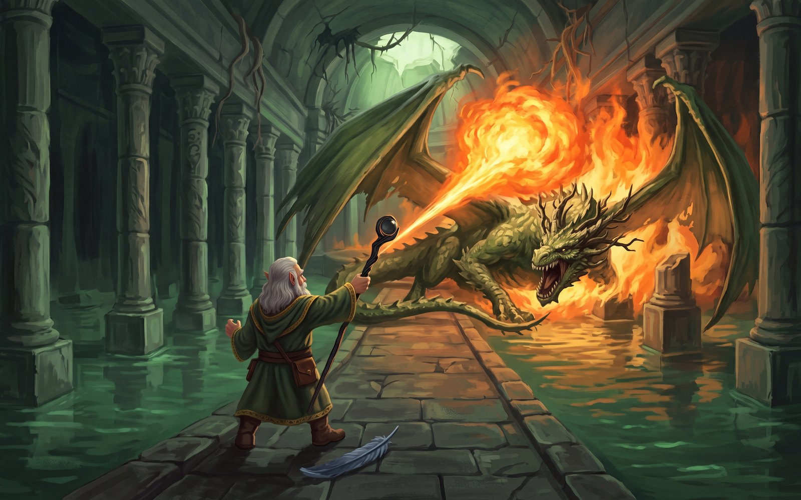
"This is for Honeysuckle, Pinenut and Pudgy, you son of a—"
Round four, the breath came back, and Jetten and Invictus both went down in it. Morgash poured Selma's potion into Invictus and put him on his feet, then knocked the dragon down a fourth time with the maul sizzling with light. Invictus spent two points of his healing touch to stand Jetten up. The dragon's last pounce found Gren and left him at eight hit points. And Gren, with the last big spell he had, shaped a fireball with every ally excluded and said, as he threw it, This is for Honeysuckle, Pinenut and Pudgy, you son of a —. Bramblemaw made its save and took half. It was enough. The Fireball slew Bramblemaw, and the crocodiles, freed of its hold, swam off into the depths.
What the narrator knows
Bramblemaw had never known what the stone was. It had wept over the jewel it hoarded and could not explain why, and could not stop, and was humiliated by strangers seeing it. There was no price that would have bought the shard — not a richer hoard, not a name, not its own life. If even a green dragon, a thing with no softness anywhere in it, broke under the shard, then what was the shard? The party never got to ask. The Thornheart was named for this wood, which grew briar around it the way a body grows scar tissue.
What the narrator knows
The lair was not finished when they left it. Rooms to the north went unexplored, and the druid who had served the dragon fell to Jetten's arrows with his story untold — what a geas had made him do in the Wyrmwood, and for how long, was never settled either way. Three squirrels lay on the causeway with a feather among them.
Behind a door to the north, a glowing green heart. Invictus took it. It was the exact green of the dragon that had hoarded it, which was either a coincidence or was not; it was warm, and it beat, and it showed him the woman and the burst. It could, once between dawns, press itself to a body dead no more than ten days and give the life back. Gren said immediately: Let's go raise Pudgy. Invictus asked which heart would bring back his family, and was told: the whole one. Four true resurrections, when it is combined — which they could do now, if they only knew how. Gren's arcane sense answered: put them together at the source. At the tree.
The hoard was a decanter of endless water, a staff of withering, a coin with Tiamat's face on it, and ten thousand gold in gems. Invictus said the choice was already made, because the sword had been whispering to him. All four pieces of the Broken Heart were in the party's hands. What to do with them was the only question left.
Part Four
The Heart Knot
In which a squirrel comes back, a goddess makes her last offer, a god answers in the fog, and a village asks four friends for its life.
Chapter IXThe Heart Knot
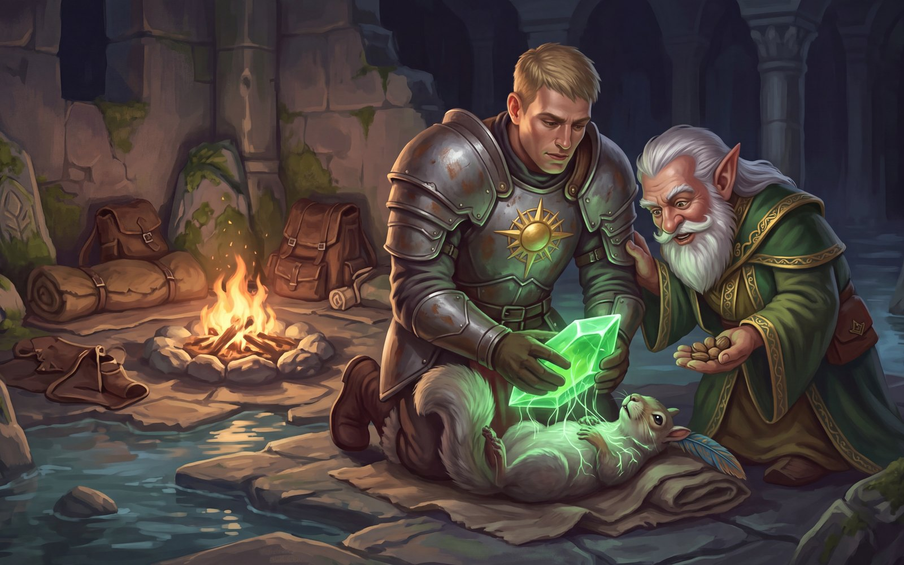
"What happened? Oh, my goodness. Did we kill the dragon? Did we beat him?"
The Thornheart's first raising went to Pudgy. Invictus read the stone's promise aloud, still in the dragon's hall — once between dawns, a body dead no more than ten days — and pressed it to the squirrel before anyone could argue for anyone else. Pudgy woke. Did we kill the dragon? Did we beat him? Gren told him that Honeysuckle and Pinenut had not made it, and fed him nuts, and Pudgy asked one thing: Will you promise to bury them outside, please, Master Gren? They slept in the geased druid's camp south of the hall. Jetten did not sleep; he never does.
The Duskheart speaks
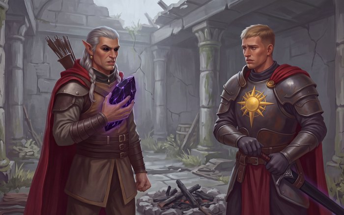
Jetten's eyes glazed inky black, and he read Shar's last offer aloud to Invictus, and did not remember saying the words.
In the morning Jetten's eyes went black as ink and he spoke, in a voice that was and was not his, Shar's last offer, verbatim:
Invictus. Killing my high priest was regrettable, but it is forgivable. My offer still stands. Take the heart shards and Midnight to the Dreamer's tree. Find the tree's heart knot and plunge the blade into it. Midnight will drain the power from the tree and the shards. The Dreamer will be trapped. Each shard can grant you a resurrection, and the heart of the tree will grant you a fifth. You will win. You will get your family back. The town will win. The Dreamer's summer will remain in Greenrest forever. I will win. My will shall be done. Think carefully, Invictus. This is my last offer.
Midnight glowed while he read it and stopped after. The Duskheart took control, Jetten said. I don't remember saying those words. I know I said them, but it wasn't me.
Invictus was genuinely torn, and said so. What's one fae versus an entire town? Either way the heart was gone, and his family stayed dead. He admitted the pain was easy to bear now and everything was foggy — I think that's what Shar does for her acolytes. I'm infected by her in some way. Takes the pain away from you. His friends did not let him have it. Jetten: It sounds like a trap. Like a bargain with the devil. It's the evil trying to work its way into you. Don't turn to it. Morgash: It seems very obvious that you will think it's the best thing to do if you are getting everything from this. You lost your bearings when you killed that guy. You lose your vow. And now you're completely lost, my friend. Jetten reminded him that the sword had been First Light once, and Invictus said Oh — I don't even remember that. Morgash: It's not the same sword. Don't lie to yourself. Gren: You haven't done anything wrong. You don't need redemption. But if you do this, you will need redemption.
Invictus heard them. I have to rely on my friends here and say I can't take her up on that offer. It just seems like the evil thing to do. He asked to go outside and pray.
The Dawnfather in the fog
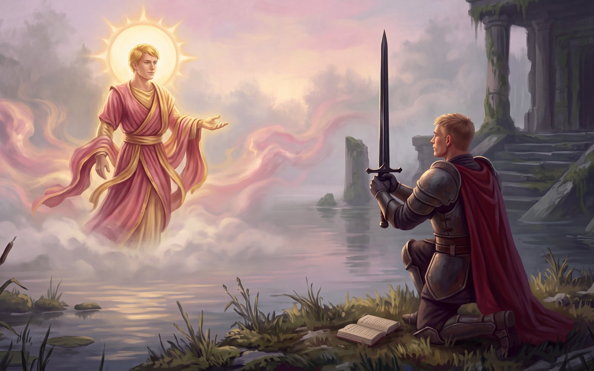
"You are not completely lost, my child, but the sword you wield must be left here. Bury it. First Light is gone."
On the lakeshore in the early morning he knelt with the psalter a priest had given him, recited the psalms, held the black sword up to the sky, and begged Lathander to release him from Shar's power. The fog curled away from the water, and the Dawnfather was in it.
"You are not completely lost, my child, but the sword you wield must be left here. Bury it. First Light is gone."
They dug a hole together and buried Midnight in the ground of the Wyrmwood. Invictus had Gren swear Pudgy to secrecy — What is? I don't know anything. Yes, sir. Honeysuckle and Pinenut were buried by a tree with acorns, a place where a squirrel could come and say hello. Pudgy went ahead to tell the forest their deeds. Invictus took a plain scimitar out of the party's stores and kept his shield, and on the way out said: I hear that buried sword calling to me and screaming. I have to get out of here before I lose my mind.
The fourth dream
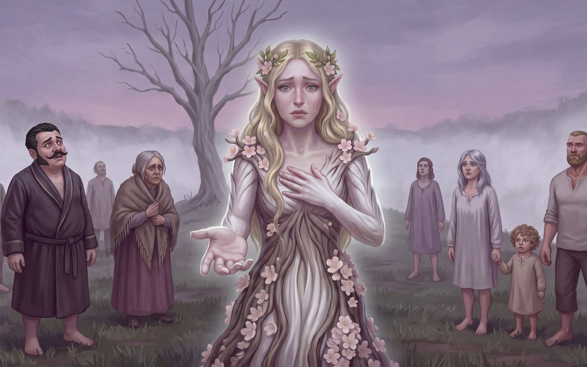
The whole town stood in their nightclothes on the bare hill, no mist between them, and for the first time in four dreams the dryad was looking at them.
Late in the morning, crossing Greenrest's limits, Jetten's moonstone lit and all four of them fell into the dream on their feet. The bare hill; the fog close; the tree where she had stood — and the whole town present in their nightclothes, no mist between them: Oswin, Selma, Enid, Ambrose, Warin, Pip. And she looked at them.
"You've been here before — in the summer, at the fog, at the breaking. You are the ones holding my heart. I want you to know I forgive him. I forgive Corin. I know he chose to leave me. But he was right. I forgive him. And now, after centuries, I can finally forgive myself for holding on so long, for all of it. I'm asking you, begging you: free me. Bring the hearts to my tree. Find the heart knot. Place them in it, one by one, and I will absorb them. On the fourth, I shall be free. Please, help me. I've been trapped for centuries."
As she faded she looked at Invictus and smiled a little. They woke at the town's edge. My vote is to go straight there and do it, Invictus said. I'm feeling a lot more moral clarity now. Hey — what was I thinking before?
The mayor in the road
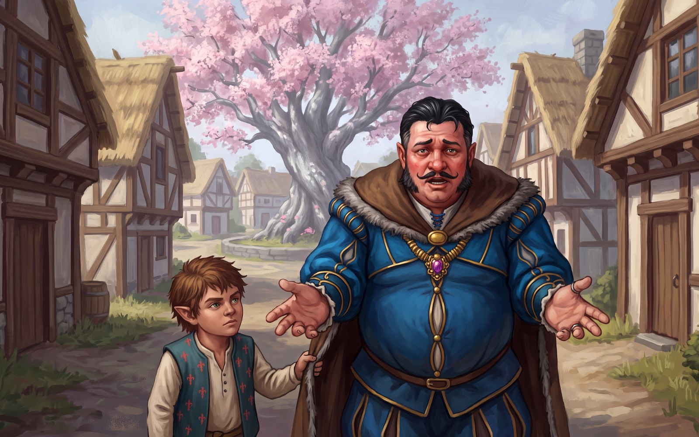
"I know what you're doing. I saw you in the dream. Please don't do this. We'll do anything."
Oswin met them in the road near the square, out of breath, with Pip beside him. I know what you're doing. I saw you in the dream. Please don't do this. We'll do anything. You don't have to let her go. She's been here the whole time — what's the difference? A key to the city. Live here as long as you want. Free meals for life; Ambrose had already agreed. I'm fond of you all, and that's what makes this so hard. The town will never prosper again. The fog, I'm sure, will come back.
Invictus: It's just evil to keep her trapped there. You know that.
It was Pip who decided it. I think he's right, Mayor. They need to do what they need to do. And the mayor of Greenrest, who had never once had to think about the tree in fifteen years, looked at a halfling child and said: Oh, Pip. You're right. Very well. I'll tell the guards to stand down. Do what you need to do. I'll go and tell the elders.
What the narrator knows
Two pleas in one morning, for opposite things, from people the party liked. Hers in the night, his in the road. Both of them were right. Greenrest would die the day the Dreamer did — the winters would get real, the harvests would fail, the mists would return — and every word Oswin said was true, and the party had just dreamed the counter-argument in Corin's own voice. The town did not turn on them because they gathered shards. It turned because it was asked, and refused, and was afraid. The watch stood down. The neighbours did not.
The square
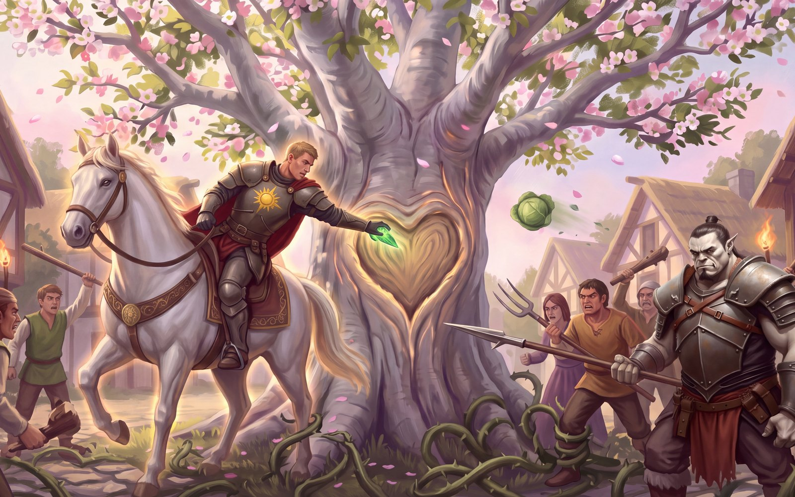
Three mobs came down on the square with pitchforks and cabbages — "They can't take our town away! Stop this!" — and the four hearts went into the knot one per round.
The knot was there in the trunk when they looked for it, a heart-shaped seam in the grey bark, and placing a shard into it took a full turn of concentration — interrupted, start over; absorbed on the placer's next turn. Nobody in the square wanted to kill anybody. Three mobs came anyway: the whole street, the farmhands, the torchbearers. Get them! They can't take our town away! Stop this!
Gren went first, as he generally did, and put a hypnotic pattern over the whole street, and the whole street stood and stared at it for the rest of the fight. Jetten began the Duskheart. Invictus gave his voice thunder and told the farmhands to think again, and they paused; Morgash told the torchbearers the same, with a look, and they paused too. Nobody swung. Gren threw a scorching ray into a wall as a warning that impressed no one. The Duskheart went in. Jetten's vines rose out of the cobbles and pinned the torchbearers where they stood. Invictus put his hands up and refused to attack, and was pelted with cabbages and tomatoes for it, every one of which bounced off his plate. Morgash began the Graveheart. Jetten stood between the mob and the tree and beckoned the air to bang every shutter in the square — nobody was impressed by that either. Invictus called a celestial horse out of nothing and mounted it. The Graveheart went in. A pitchfork came at Morgash and his pike came back on the riposte and put a torchbearer down hard, and the club and the sword that followed found gaps in his armour, and he stood there and let them. Gren began the Tideheart. None shall pass! he announced, and tapped a farmhand's knee with the flat of his staff. The Tideheart went in. Invictus rode to the tree, leaned out of the saddle, and pressed the Thornheart into the knot with the words This is for you — and blot out all my iniquities, Lathander — and a tomato took him square in the eye, and he kept his seat. Jetten's vines failed and he threw caltrops and cast the vines again and caught Gren and himself in them.
The Thornheart went in.
The passing
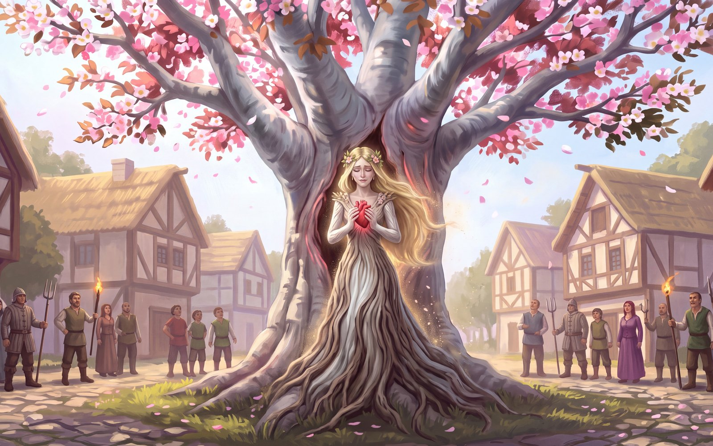
"It's stone. It has been stone in your hands for so long — warm and hard — and now it beats inside of me again."
On the fourth heart the knot opened, and the dryad stepped out of the trunk holding the whole heart. Tall, blond, wood-and-blossom, the woman from every dream, in the waking world for the first and last time. She looked at them.
"It's stone. It has been stone in your hands for so long, warm and hard, and now it beats inside of me again."
She closed her hands around it. The light went out of the facets. The edges lost their shape. It went soft and warm and wet, and by the time she lifted it to her breast it was not a jewel at all. It was a heart — plain, red, ordinary meat, beating in her hands. Because the stone had never been the magic. The stone was the part of her that could not die. She put it back where it belonged. The mob began screaming. The tree went into full bloom — every branch at once, the most alive anything in that valley had ever been — and she was gone.
What the narrator knows
She left without giving them anything, and the table noticed. It was on purpose. The Heart's magic was her; when she went, it went; there was nothing left to hand over but the story. Above Harrow Vane there is always somebody, and the order of Shar knows that a Dark Justiciar walked out of its temple and then walked away from the goddess. Midnight is in the ground on a lakeshore, still calling, and only four people and a squirrel know where.
The neighbours walked away muttering and dejected. From somewhere far off and everywhere: Thank you. Thank you so much. I can never repay you. Morgash said Yes, you can. Wait. Pudgy arrived — Oh, boss, I just got back. What happened? — and Gren gave him an acorn, and Pudgy stayed by Gren from that day.
The mist comes home
The mists rolled slowly back into the valley. Commoners looked at the four of them, sad and dejected, and would not speak. The elders understood, and could never forgive. Oswin said: Please. Please just go.
And Invictus came to, the way a man surfaces from deep water, and said: Thomas. My name is Thomas.
EpilogueThe First Autumn
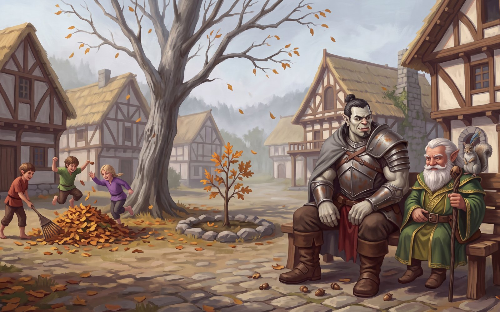
Leaves fell in the square for the first time in living memory. The children had never seen it.
Leaves fell in the square that autumn for the first time in living memory, and the children of Greenrest had never seen it and did not know what to do, and then did. Oswin watched from the steps of his tower. A few families took the Trade Way south for the winter, and it was a real winter. The harvest was smaller. It was also real. And one evening at a sick child's bedside, Acolyte Enid prayed to the Earthmother as she had prayed ten thousand times before, and for the first time in Greenrest's history something answered. Chauntea had forgiven the town. Greenrest had a healer of its own.
Morgash found that ten thousand gold in gems was the big score after all. Warin Holt asked him to hold the gate at Hedgewatch, and he stayed — I feel responsible — and in time the town forgave him, and Oswin always stood him breakfast and dinner, and he had a permanent room at the Full Larder.
Jetten stayed friends with Thomas and came and went. One evening the moonstone at his throat glowed green for the last time, and he had a real dream of his sister, sent by a fey who owed him, and he said goodbye to her properly. In the morning the stone was milky white.
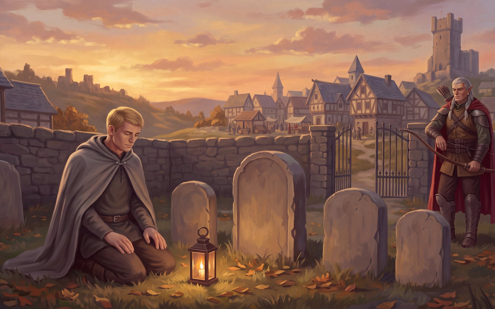
He read every name aloud, and then his own, and stayed until dark.
Thomas went home. A month later in Daggerford he mended things with the temple of Lathander and walked to the five graves in the walled yard, and read every name aloud, and then his own, and stayed until it was dark. The grief ended there — not the memory, the grief. He became a paladin again, properly, and went wandering with Jetten for some years after, the two of them, slaying evil where they found it.
Gren learned that every squirrel in the Misty Forest knew that Gren the Mighty had freed the Green Lady, and his warren, which had sent him away, sent for him, and there was a feast. He came back to Greenrest afterward and planted the Everseed Acorn in the square beside the old tree, and stayed. It grew into a young oak that drops its leaves every autumn, as an oak should. Pudgy became the prophet of a small religion whose members reluctantly tolerate Morgash. Gren's old debt to the orc is paid in acorns, one by the bedside every morning; Morgash steps on them about half the time.
Nobody was wrong enough to make it clean. They freed a soul a thousand years caged, and they turned off a village's good fortune in front of the village, and both of those things are true. Somewhere past the fog, Corin's story ended a long time ago, and nobody will ever know how. But she stopped waiting for it, which is the only ending anyone gets.
Played across nine sessions, 7 July to 29 September 2026 — Thomas A. Invictus, Morgash the Gravemaker, Gren Greenmantle, Jetten Elisedil, and the one behind the screen.
AfterwordWhat the Narrator Knew
A campaign about a grief nobody could see is also, unavoidably, a campaign about what four people chose to look at. These are the narrator's notes gathered in one place — what the company saw, and what stayed just out of view.
What they did well
Credit first, because it is real, and because there is more of it than of anything else. The party found the campaign's opening clues faster than the campaign expected them to. They read Selma's label aloud before they had ever seen the village. They chose, on their first night, to sleep without the tonic — the single most important decision anyone made in nine sessions, and it was made from suspicion alone. Gren named the dryad from a dream on the first morning, and Thomas connected her to the tree in the square inside a minute. Morgash read the displacer prints at the trailhead and said so out loud, and read the bullywugs' glowing eyes before an arrow flew.
They were as good with people as with prints. Morgash gave Oswin the honest version at a breakfast that was going wrong, and mended it. Jetten kept a portrait back from a sale on a hunch, carried it to a shopkeeper's counter, and it produced the name Thomas had crossed a forest for. Morgash held a friend back from a murder with his arms and an argument, and when the friend chose anyway, stayed his friend. On the lakeshore, with a goddess's last offer on the table and every resurrection in the world in the balance, four people talked a fifth back from it in ten minutes of plain speech. They freed her at the cost of everything the Heart could have given them — and spent the first Thornheart dawn on a squirrel, without being asked twice. Of every door in the last session, that one was the smallest, and it is the one that says most about who they were.
Threads for the next story
A good campaign leaves more behind than it uses. These are the ones still lying in the road, for anyone who goes back that way.
The Traveller's Letter — addressed in a careful hand to someone in Daggerford, still sealed in Jetten's pack. Somebody in Waterdeep is waiting for a merchant who will not come home.
The fey temple — a line on the lintel, a light, and a road home, and beneath the shrine a thin place the displacer pack came through. The watchtower above the valley overlooks both roads to it.
Warin's barracks — "I don't want to bother Oswin with such things." The constable's fuller theory of the Kestrels' end is still his to tell.
Coll's empty plot, and Tess by the tannery — a grave dug for people who never came home, and a woman in Daggerford who never got Marn's letter. Both are one visit from closed.
Hesper's word — the one question nobody put to a five-hundred-year-old woman: Greenrest? She would have said she did not know it, and half a campaign's theory would have gone quiet.
The Widow Fen — a drop-stone on the moor path, a jar marked ours in a lower room, and an annotated Volo's Guide nobody opened.
The Iris — a shut stone eye at the centre of a temple of the Lady of Loss, passed twice with a prisoner and a priest more urgent than a carving. Above Harrow Vane there is always somebody.
The Daggerford ledger office — where a scribe once started pulling threads, and where Veck's other customers may still keep books.
The Wyrmwood — rooms north of the hall unexplored, a druid's story untold, and a black sword in the ground on the lakeshore that has not stopped calling.
Corin — a name said aloud in the first two dreams and never followed. What became of him past the fog is the one thing nobody in this story ever learned. A ballad sheet on the roadside remembers him; so, perhaps, does a raven-haired family somewhere.
None of what stayed shut changed the ending. Four hunters came down the Trade Way after a relic and left having given it away; they were asked, twice in one morning, for opposite things by people they liked, and they chose the harder one and lived with the square's silence afterward. A mystery is the sum of what its detectives pick up, and the thing these four picked up, in the end, was a stranger's thousand-year grief, and they carried it home. That is the part worth keeping.
Appendix A
What If…?
The last session was written with six doors in it. The company opened one. These are the other five, as they were prepared — what each would have cost, and what it would have made of each of the four.
Appendix AWhat If…?
Both roads — hers and Shar's — needed all four shards at the tree, and every holder had a veto: Morgash held the Graveheart, Gren the Tideheart, Jetten the Duskheart, Invictus the Thornheart. Nobody could do either thing alone, and nobody could take a shard by force. Whatever the company chose, it had to be chosen by talking. That was the design, and it is why the argument on the lakeshore was the scene the whole campaign had been building toward.
A · Free her — the road taken
All four hearts into the knot, one at a time, each turning a quarter of the tree gold, with the town objecting in the square as it did. The Dreamer steps out, the crystal gives, and she goes. The Heart goes with her; nobody gets a resurrection. The leaves fall; the fog returns to the valley's rim; Enid's prayer is answered. This is the ending the company chose and the one the chronicle tells, and each of the four's fate is in the Epilogue.
B · Midnight into the knot
Shar's road. Invictus drives the black sword into the heart knot with the four shards at the tree; the blade goes in as if the wood had been waiting for it; the warmth goes out of the bark, out of the shards, and up the steel into his hand. The shards go grey and cold. The blossoms close. The tree stays green, and stops. When he pulls Midnight out it is heavier than it was, and it beats. The Dreamer is trapped under the square forever. The town, which heard her ask, chooses its summer anyway; nobody fights, nobody dies, and Oswin cries with relief and cannot look at the tree. There is a feast, a key to the town, and Invictus is named a friend of Greenrest.
Invictus. A month later, in Daggerford, five graves in a row. He draws Midnight and says their names one at a time, and the ground gives them back. Ann calls him Thomas, the way she always did; he can say all five of their names and still cannot say his own. One morning the youngest asks if he remembers the day he dropped the whole jug of syrup on the kitchen floor, and everyone laughs, and he laughs with them, and he does not remember it, and never will. There are a lot of days like that. But they are at his table, all five of them, and most days that is enough.
Morgash. Word travels — the dragon, the temple, the choice at the tree. Months later a shadow crosses the sun wherever he has ended up: a red dragon, and on its back, Lae'zel. I said I could not love anyone in this world. I have been at war since. I was wrong about you. You can make the tough choices and the sacrifices to save a people when they need to be made. There is a place at my side, my Morgash. I need you. Ride with me. Whether he goes is his to decide. The offer is real, and it is the one thing he wanted more than the chair by the fire.
Gren. The squirrels stop coming. Not one in the whole Wyrmwood will come down a tree for him now. Word reaches the warren and the elders send word back: don't come home. It is the second time they have cast him out, and this time the forest agrees with them; he sealed a fey creature into a tree for good, and nothing that lives under leaves forgets that. The Everseed Acorn went grey in his pocket the day the sword went in. He cannot plant it anywhere now.
Jetten. He does not come to the feast. By the time anyone thinks to look for him he is on the Trade Way going south, and he finds new company, the way elves do eventually. He does not write, and when someone mentions Thomas he changes the subject. The moonstone never glows again. His last words to Invictus, if there is a goodbye at all: You got five. She didn't get one. He means his sister.
Greenrest. The summer never turns. There is no autumn, ever again, and the children grow up without seeing a leaf fall. The town ties harvest ribbons around the scar in the knot. The dreams stop, and Greenrest sleeps well for the first time in a generation. Selma pours the tonic out, and nobody hears her anymore.
C · Walk away with the shards
The road that costs nothing and gives nothing. The shards can only be joined at the knot, so keeping them means keeping four separate stones, each with its own small power, and no resurrections for anyone. The company leaves Greenrest with the four hearts in their packs. The town keeps its summer. The tree keeps its buds and never quite blooms. She is not sealed, only left — and wherever they sleep, every night, she asks again. Someday someone else could carry the shards home.
Invictus. Carries the Thornheart and a sword he cannot use. The Duskheart's voice is quiet now — Shar called it her last offer and meant it — but the buried question is not: he crossed a forest for a name, found it, took it, and walked away from both the thing that could have brought his family back and the thing that could have set a stranger free. He has the pain again, undimmed. What he does with it is the whole of the rest of his life.
Morgash. Retires on the dragon's gems, as he always meant to, and finds the chair by the fire is not what he thought. The Graveheart on its cord under his shirt beats a little harder some nights than others, and he knows exactly what it is asking. He held a gate once against a netherbrain. This time he walked away from one.
Gren. The squirrels still come — he did nothing to the Green Lady, after all — but they ask about her, in the way squirrels ask, every time. The acorn stays green in his pocket and he never finds the place to plant it, because the one place that fit was the one he left with her still weeping under it. Pudgy follows him regardless.
Jetten. Sleeps in trance with the Duskheart on his chest and dreams her asking, every night, in his sister's cadence. He was the one who said it's not right to let her remain enslaved, and he was the one who could have made it happen by putting one stone in a knot. The moonstone glows every night, faintly, and he stops looking at it.
Greenrest. Unchanged, which is the point. Lucky, kind, comfortable, dreaming a little now that the tonic has failed, and never quite sure what four strangers took away with them in their packs.
D · The company cannot agree
No blades between friends, ever. Both roads need all four shards, so nobody can do either alone, and each holder decides what happens to their own stone. If even one holder will not give theirs up, neither road can be walked, and it ends as C — but the argument is the scene. The one the campaign was built for. On the morning it was played, the split was real: Invictus leaning Shar's way with the sword whispering, Jetten on record against, Gren and Morgash undeclared. It resolved on the lakeshore in about ten minutes of honest talk. Had it not:
Invictus holds the Thornheart, the only stone that can raise the dead on its own. He can keep his veto and keep a squirrel's worth of resurrection every dawn, and nothing else. The friends who held him back in the cell cannot hold his shard; they can only ask.
Morgash holds the Graveheart and has said out loud, twice, you will regret this. He is the one who told Oswin the honest version at breakfast. In a stalemate he is the one most likely to name the price plainly: a woman under the square, or a town above it, and which of us gets to decide for the other.
Gren holds the Tideheart and the standing that comes from being the one person in the company the forest trusts. If the split hardens, he is the one who can walk away from Greenrest and still be welcome under leaves. He is also the one who said if you do this, you will need redemption, and would have to decide whether to keep saying it.
Jetten holds the Duskheart, which is a veto and a temptation in one — see E. He is the company's conscience and Thomas's oldest friend, and in a true deadlock those two things pull opposite ways.
Greenrest waits. The tree keeps its buds. The elders meet. And every night four sleepers in the Long Rest are asked the same question by someone who cannot stop asking it.
E · Jetten uses the Duskheart on Invictus
Shar's own shard reaches into a memory once at dusk and changes it. The offer was less than a day old and lasted under ten minutes; Jetten could have erased it or rewritten it, and Invictus would have had one chance to resist. The elf who spoke Shar's words takes them back with Shar's own stone. If it works, Invictus forgets the offer entirely; Shar called it her last and meant it, and Midnight goes quiet. The company remembers what they did to him. He does not.
Invictus walks to the tree with a clear head he did not earn and a sword that has stopped talking. He frees her, probably, and it is a kindness — and the kindness is Shar's, delivered through his best friend's hands, at no cost to the goddess: the memory that hurts, taken. He is the campaign's proof that oblivion-as-mercy works. Somewhere he knows a piece is missing, the way he knew about his name.
Morgash would have argued against it — he is the one who wants Thomas to choose, and said so with his arms around the man's chest — and, outvoted, would have carried it. He does not forget things. He would look at Thomas at the tree and see a man who had been decided for, and think of the Basilisk Gate, and the nine who lived because someone else made the call.
Gren said Shar was the deepest of evils, and here is her shard doing her work on a friend. He would have wanted to be told it was necessary, and would not quite have believed it, and would have watched the acorn in his pocket for a week afterward to see whether it stayed green.
Jetten pays the price the shard was built to extract. He said it's the evil trying to work its way into you, and then used the evil's own instrument on the person he had known longest. The moonstone's last glow, in this ending, is not a gift from a grateful fey; it is Sehanine, lady of dreams, asking her devotee what he did to a man's memory.
Greenrest gets the same morning as A — the leaves, the fog, Enid's answered prayer — and never knows the difference. That is the whole trouble with it.
F · Raise Pudgy before they leave — the road taken
The Thornheart raises one body a dawn, dead ten days or less, and Invictus held it. Three squirrels lay in the great hall, one of them wearing Longshadow's feather; Honeysuckle and Pinenut would each have needed a dawn of their own, and it had to happen before any Shar's-road ending, since a drained shard raises no one. The company spent the very first raising on Pudgy, without being asked twice. Did we win? Where's Honeysuckle? They buried the other two under a tree with acorns, and a squirrel became a prophet. Of all the doors in the last session, this was the smallest, and it is the one that tells you most about who they were.
Appendix B
A Bestiary of the Misty Forest
Every creature the company fought, as the world's own Bestiary records it — the narrative only, never the numbers. A page went in only after the thing had been faced.
Appendix BA Bestiary of the Misty Forest
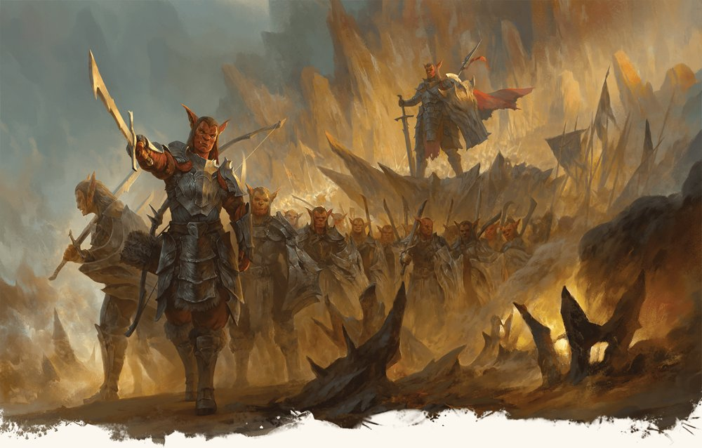
Hobgoblins
Chapter I · the cave below the bridge on the Trade Way
Conquerers of Every Horizon
Hobgoblins embody the primal urge to grow and spread, expressing such drives by bending the world to their whims. Lone hobgoblins claim woodland territories and plunder the wilds. In groups, they form hierarchical, martial societies bent on conquering lands and stripping them of resources to serve their expansionist zeal.
Hobgoblins often subjugate animals, monsters, and destructive Fey—particularly goblins and bugbears—to serve their plans. Hobgoblins might ally with dragons, warlords, the servants of warlike gods, or other powerful creatures that promise them control of new territories. Should hobgoblins bring an entire land to heel, they seek new conquests, venturing across seas, into the Underdark, or to stars and planes of existence beyond.
Many hobgoblins serve the violent god Maglubiyet, whose hunger for conquest matches their own. Hobgoblin followers of Maglubiyet flourish in the Infinite Battlefield of Acheron, where they endlessly indulge their drive for domination. These war-obsessed hobgoblins employ elaborate tactics and strange weapons, which they sometimes unleash on worlds of the Material Plane.
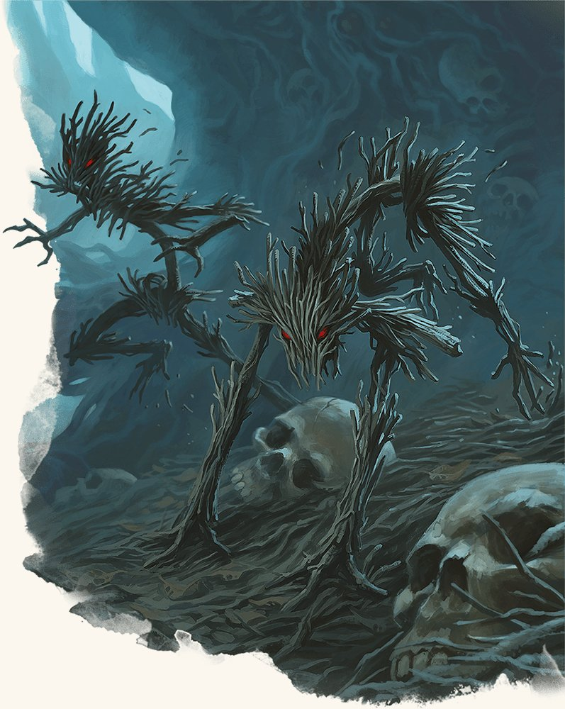
Twig blights
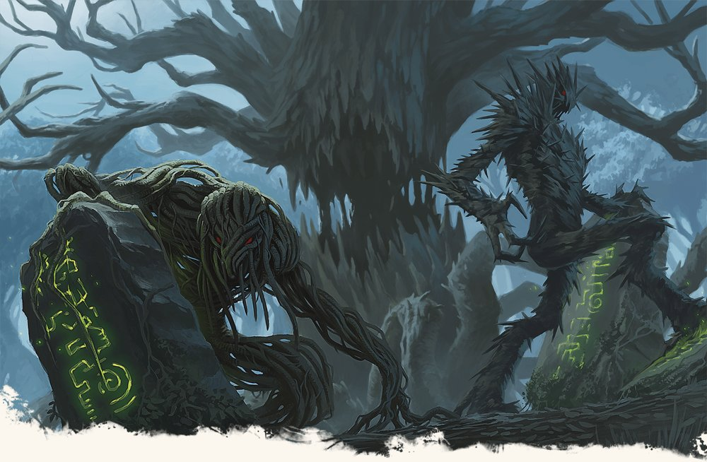
A vine blight (left) and a needle blight, with a tree blight looming behind
Blights
Chapter II · the clearing in the Misty Forest
Plants Sprouted from Evil
It lives, though it looks dead. In an age long past, someone staked a vampire to the earth on this very spot. The wooden stake was yet green and took root. And so grew the Gulthias Tree, reverberating with primal power.
—Belak the Outcast, druid of the Twilight Grove
Blights are malicious plants that sprout from deep-rooted evil. Their gnarled forms twist with fearsome features suggestive of human limbs and vicious maws. Blights lurk in ambush amid mundane vegetation and lash out at non-Plant creatures. While blights can act independently, they’re usually motivated by whatever sinister forces spawned them or by wicked creatures with control over nature. The magic that creates blights often affects other vegetation as well, causing brambles, vines, and gnarled trees to overwhelm roads and fields, choke wells and streams, and force animals from their natural habitat. This might make blights the first sign of an oncoming wave of corruption.
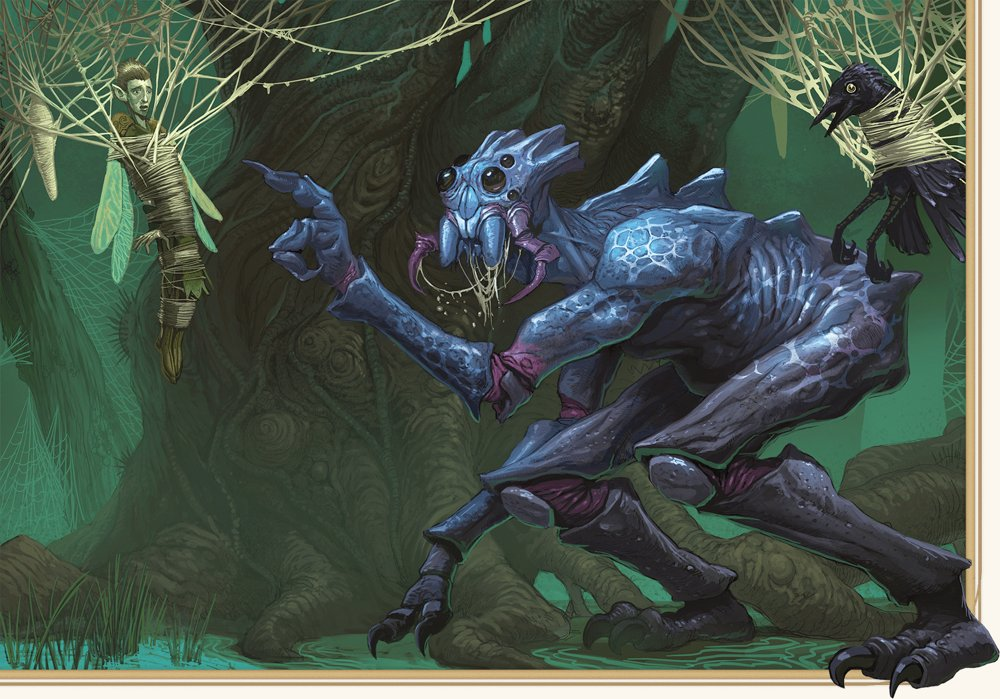
Ettercap
Chapter II · the web-halls of the ruined fey temple
Venomous Arachnid Abductor
Spiderlike hunters, ettercaps lurk in forested depths and seek prey to drag into their web-choked lairs. These vicious predators have arachnid features and hunched, bipedal frames, and they’re notorious for their venomous bites and ability to shoot out webs to entrap their victims. Ettercaps often hunt in small groups alongside giant spiders and mundane spider swarms.
Ettercaps frequently overhunt their environment. Left unchecked, ettercaps might fill whole woodlands with their webs and the cocooned remains of past meals, which puts ettercaps in conflict with Fey. Spiteful ettercaps go out of their way to torment and feed on Fey; they prefer to menace those smaller than themselves, like pixies and sprites. They rarely devour other sapient creatures swiftly, preferring to cocoon their captives and terrorize them for days.
Ettercaps avoid fire, which can quickly burn through their webs and the dead trees where they make their homes.
Will-o'-Wisp
Chapter II · the lure at the cleft — it escaped, and Gren has not forgotten
Guide on the Path to Doom
From a distance, will-o’-wisps look like lanterns bobbing in the dark. Through the windows of abandoned structures or around the bends of treacherous paths, these spirits tempt the curious into peril. Once their prey is vulnerable, will-o’-wisps feed on the life force of those they lay low.
Displacer Beast
Chapter III · the Kestrels' camp — three beasts and the alpha
Deceptive Feline Stalker
A displacer beast resembles a gaunt, six-legged panther with a barbed tentacle sprouting from each of its shoulders. This predator uses innate magic to displace light so it appears to be several feet away from its actual location.
The murderous fury of a displacer beast is fit only for nightmares, of which I’ve been haunted since narrowly escaping one’s ambush. I’m certain that beast stalks me still.
—Jen-Ahb, naturalist and displacer beast survivor
Displacer beasts hunt not just to feed but because they enjoy killing. Once displacer beasts begin stalking prey, they can’t be deterred until either they or their quarry is slain. While displacer beasts commonly inhabit dense forests, they might pursue travelers across great distances and even into cities or dungeons. More cunning than mere animals, these predators might set ambushes or lie hidden for days to bring down their prey.
Displacer beasts sometimes pursue prey through portals to other planes of existence. As a result, these predators can be found across the multiverse, particularly on the worlds of the Material Plane, in the Shadowfell, and in the Feywild. These restless hunters can destroy a land’s natural balance and drive other creatures to extinction. As a result, many druid circles and Fey view displacer beasts as deadly threats.
Adventurers face an onslaught from all manner of skeletons.
Skeletons
Chapter IV · the catacombs of the Hollow Shrine
Ossified Evil
Skeletons rise at the summons of necromancers and foul spirits. Whether they’re the remains of the ancient dead or fresh bones bound to morbid ambitions, they commit deathless work for whatever forces reanimated them, often serving as guardians, soldiers, or laborers. In rare cases, skeletons are reanimated but given no particular direction.
A tiefling tries to hide in the midst of a zombie horde.
Zombies
Chapter IV · the Hollow Shrine, and Hesper's two silent attendants
Relentless Reanimated Corpses
Then, by a spectacular crack of lightning, the figures came into view, moving slowly toward the village. Over driving winds a voice cried out, “The dead come for Marais d’Tarascon! An army of the walking dead!”
—Account of the Night of the Walking Dead
Zombies are unthinking, reanimated corpses, often gruesomely marred by decay and lethal traumas. They serve whatever supernatural force animates them—typically evil necromancers or fiendish spirits. Zombies are relentless, merciless, and resilient, and their dead flesh can carry on even after suffering grievous wounds. While they can follow simple orders, they rely on primal drives rather than thought. They fulfill commands by working tirelessly or battering through foes, but they are easily stymied by barriers or unexpected circumstances.
Zombies are usually created from Humanoid corpses, but the remains of other creatures can also become zombies. Such monstrous zombies might possess the strength they had in life or a measure of their supernatural abilities, but they employ such abilities haphazardly at best.
Wight
Chapter IV · Osric, Hesper, Cadoc — and Aldous and Edda of the Kestrel Company
Life-Leeching Corpse Warrior
Wights are the withered corpses of relentless warriors whose wickedness sustains them beyond death. Unlike mere zombies, they retain the memories and evil agendas they harbored in life.
After dying and returning from the grave, a wight continues its villainous ways, but it is now driven by a hunger for life. A wight drains living essence through its attacks. Humanoids slain by a wight’s life-sapping grip reanimate a day later and serve the wight as obedient zombies.
Wights might return from the dead for a multitude of sinister reasons.
A peryton's humanoid-shaped shadow suggests the monster's supernatural origin.
Peryton
Chapter V · Longshadow and two others, at the temple ruin on the road out
Winged Heart Hunter
Perytons are monstrous predators that hunt people—particularly humans and elves—in favor of all other prey. With the bodies of mighty avian scavengers and fanged, stag-like heads, perytons use ambush tactics to dive-bomb travelers. Strangely, the shadows they cast resemble humanoid silhouettes. This supernatural oddity lends credence to stories that perytons are cursed humans or elves, or that they arise from carrion birds that feed on the corpses of villains.
Perytons tear out the hearts of those they slay, carrying the organs back to grisly lairs. This gives rise to numerous superstitions surrounding perytons.
A bullywug warriorA bullywug bog sage
Bullywugs
Chapter VI · the Widow Fen — enthralled, with a purplish glow behind the eyes
Pompous Frog Folk of the Fens
Halt! The toll! All who cross the black water owe the toll!
—every bullywug sentry, everywhere, always
Bullywugs are frog folk of the deep fens, touched by the Feywild and convinced — each and every one — of their own tremendous importance. They dress in scavenged finery, award one another titles longer than their spears, and conduct the business of their muddy courts with a pomp that would embarrass a royal herald. Laughing at any of this is genuinely dangerous.
For all the strut, bullywugs know exactly where they stand in the fen's order of things: they serve whatever is bigger and more terrible than they are, and they serve it loudly, hoping to be noticed. A traveler stopped by a bullywug toll-gang should worry less about the frogs than about who collects the tribute.
Their bog sages are croaking mystics who pull magic up out of the mire itself — mud, mist, and insect swarms answering an amphibian's imperious gesture.
Animated armorAn animated rug of smothering
Animated Objects
Chapter VI · the hags' treetop village
Ordinary Things, Borrowed Wills
Sit anywhere you like, dearies. The house does so love company.
—a welcome nobody should accept
Spellcasters of sufficient craft can pour a sliver of will into the furnishings of their homes, and the result is a household that never sleeps and never stops working. An animated object has no mind of its own — only its instructions, followed with the patience of a thing that has never once been tired.
Most of the time they are indistinguishable from what they appear to be. A suit of armor stands its post for years; a broom sweeps the same floor at the same hour; a rug lies flat by the hearth, exactly where a guest would warm their feet. The oldest trick in a magician's house is simply this: everything in it is furniture, right up until the moment the door is closed.
Swords fly, brooms beat, armor marches — but the rug is the one the tales warn about. It waits under the visitor, and folds.
A green hag
Green Hags
Chapter VI · Hazel and Mabel, once three sisters
Malicious Fey of Bog and Fen
Hags in the moor got hold of a shard and feed their coven magic with it. Bargain at your own risk.
—the party's own research, pieced together in Daggerford
Green hags are fey crones who make their homes in drowned and rotting places — bogs, fens, and swamps where the water is black and the paths are few. They delight in misery the way gardeners delight in growing things: they cultivate it, harvest it, trade in it. A green hag rarely opens with violence when a bargain will hurt more; her prices sound survivable and never are.
They are consummate deceivers. A green hag can throw her voice across the water, mimic the cry of a drowning man or the voice of someone dearly missed, and walk unseen when it suits her. What looks like a helpless figure on a distant hummock is often the hag herself, fishing.
Hags are strongest in threes. A full coven shares magic between its members that none could work alone, and hags grieve a broken coven the way mortals grieve a family — bitterly, endlessly, and with somebody else expected to pay for it.
Sharrans
Chapter VII · the Iris — Harrow Vane, high priest; zealots, enforcers and acolytes
Harrow Vane, high priest of the IrisA zealotAn enforcerAn acolyte
The Faithful of the Lady of Loss
She does not ask you to love the dark. Only to set down what you are carrying.
—the offer, made in a thousand towns
Shar is the Lady of Loss, mistress of night, secrets, and forgetting. Her clergy recruit with relief rather than threats: they look for people in the worst part of a grief and offer to take the memory away. Most of the faithful came to her exactly that way and remember the bargain as a kindness. A Sharran is rarely a fanatic. He is usually somebody who was helped, and stayed.
On that mercy the church builds a doctrine. A grief allowed to run its course is spent and gone; a grief kept open never runs dry. So the order does not heal sorrow — it cultivates it, in itself and in others, and counts the work holy. Sharran houses are built underground or inside old ruins, keep to night hours, and are generally tolerated by neighbours who have no idea what they are.
The faithful are living folk, never undead; Shar's church has no use for corpses. Its ranks run roughly four ways. Acolytes are the newest and do most of the casting — darkness, holding words, guardian spirits. Zealots are the devout rank and file, plainly equipped and hard to rout. Enforcers are trained soldiers in the order's pay, armed with polearms and blades, who fight like veterans and tend to pick the weakest figure in a line and stay on it. Priests are few and dangerous out of all proportion to their number: necrotic magic spent freely, authority over a whole house, and spells enough to simply leave a fight going badly.
They talk before they draw, and the offer is sincere. Refusing it does not offend them — patience costs the church nothing, and the offer will be made again. They take prisoners for purposes they do not explain. They are hard to intimidate, since a person whose worst memory has already been taken has little left to threaten. And they answer upward, always, to somebody the traveller has not met.
Shambling Mound
Chapter VIII · the drowned temple of the Wyrmwood
Manifestation of Primeval Power
Shambling mounds—also known as “shamblers”—embody the tenacity of the wilderness, seeking only to consume and grow. These masses of vegetation rise up to half again as tall as a human and possess thick limbs and a vague head. As they move through bogs and undergrowth, they ensnare creatures that come within reach. Shambling mounds bury those they catch within their own forms as compost.
Strange circumstances might give rise to shambling mounds, transforming vegetation into hulks with rudimentary cunning. Such conditions include strikes from magical lightning, nature defending itself, or druidic curses.
The Wyrmwood's druid
Druid
Chapter VIII · the geased druid of the Wyrmwood — “must serve the master”
Steward and Sage of Nature
Druids use primal magic, traditional teachings, and bonds with animals and eldritch beings to guard the natural world and heal its ills. These magic-users might be recluses devoted to a particular land, or they might be part of a mystic organization.
A giant crocodile
Giant Crocodile
Chapter VIII · the Wyrmwood's flooded hall
Ambush Hunters of Deep Water
A giant crocodile is a crocodile grown to enormous size: a huge, thick-hided beast that lumbers on land but swims far faster than it walks, and can stay beneath the water for an hour at a stretch.
It fights with jaws and tail. The bite clamps down and holds on — anything up to the size of a horse is seized and pinned, able to do little but struggle while the crocodile keeps it. The tail sweeps smaller creatures clean off their feet.
Giant crocodiles are animals, not monsters: hungry and patient rather than cruel. In the Wyrmwood they drifted through the flooded halls of a sunken temple, indifferent until something stepped into the water. They lay under the green dragon's influence there, and when he died they simply swam away into the deep.
Bramblemaw
Green Dragons
Chapter VIII · Bramblemaw
Dragons of Deceit and Derision
From forbidden forest depths, green dragons whisper evils into the world and manipulate the lives of those who listen. Elusive, conniving, and egotistical, these chromatic dragons patiently prey on the fears of shorter-lived beings, corrupting and isolating them. Green dragons might lurk amid labyrinthine wildernesses for centuries without revealing themselves; even their most devoted followers might know them only as the voice of the woodlands or a whisper in their dreams.
Despite their might, most green dragons disdain physical violence, viewing combat as servants’ work and preferring to trick foes into dangerous or exploitative scenarios. These dragons collect “baubles” that embody their webs of manipulation and serve as tools of extortion, such as compromising documents, family heirlooms, and sentimental treasures.